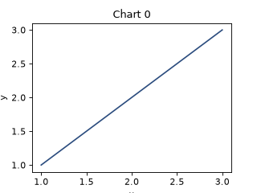
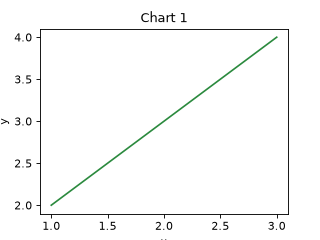
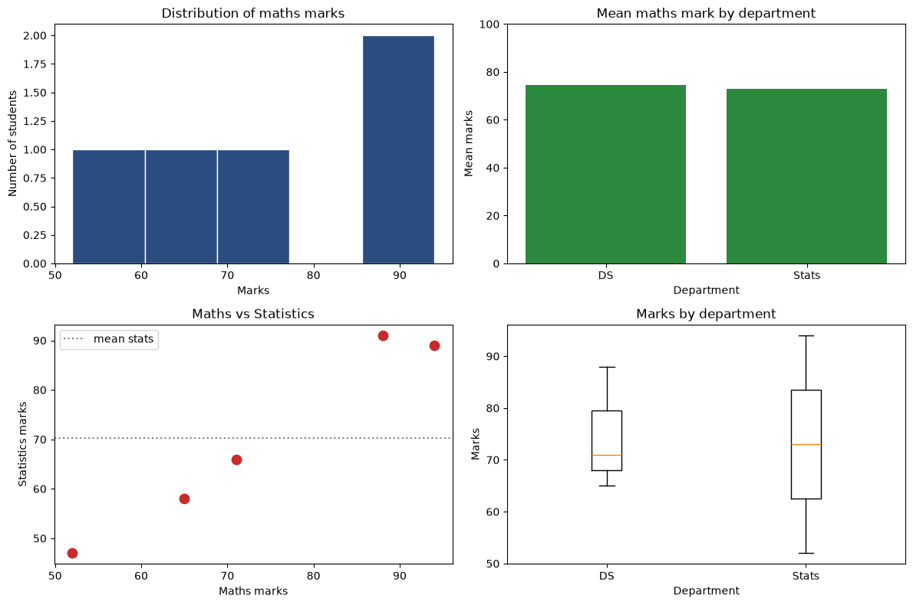
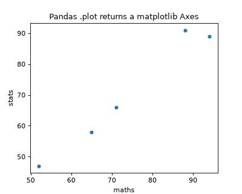
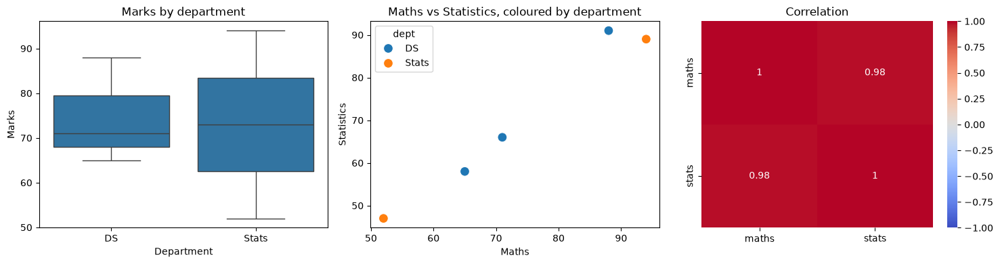

18 practicals, each set out as 1. Question, 2. Aim, 3. Steps, 4. Programme, 5. Execution and Results.
Code lives in labs/course-9-python-da/.
NOTE
Everything here runs. This is one of the few courses whose prescribed
tools install cleanly, so nothing is desk-checked and nothing says "not
executed". All 18 practicals are executed and asserted by
tools/data-science/run_data_labs.py, on the NumPy and Pandas versions in
output/VERSIONS.txt, and their results are checked against the
hand-computed values in the notes. Under 5. Execution and Results is what each one printed;
practical 18's charts are shown as it drew them.
pip install -r tools/data-science/requirements.txt
python3 tools/data-science/run_data_labs.py course9| Practicals | Topic |
|---|---|
| 1–4 | NumPy |
| 5–8 | Pandas structures |
| 9–12 | I/O and cleaning |
| 13–14 | Strings and features |
| 15–18 | Wrangling and visualization |
Three practicals time something — 2's vectorisation and 12's apply against arithmetic, best
of three runs where it says so. A timing measures the machine at a moment, so those lines differ
from run to run, and capture_lab_outputs.py --check sets them aside; every other line must
repeat exactly.
The lab exam will give you either Jupyter or a plain editor.
jupyter lab # or: jupyter notebook
python3 script.pyIn Jupyter, three things save you time: df.<TAB> completes method names,
pd.merge? shows the docstring, and %timeit expr measures a line. Nobody
memorises the parameter lists — knowing how to look them up is the actual
skill, and examiners know it.
One import block for everything:
import numpy as np
import pandas as pd
import matplotlib
matplotlib.use("Agg") # no display on a server; saves files instead
import matplotlib.pyplot as plt
import seaborn as sns
pd.set_option("display.max_columns", None)
pd.set_option("display.width", 120)Create NumPy arrays and explore their attributes and data types.
Make arrays in the standard ways, read their attributes, and meet the dtype traps.
THE POINT
a = np.array([1, 2, 3])
b = np.zeros((2, 3)); c = np.ones((2, 3)); d = np.full((2, 3), 7)
e = np.arange(0, 10, 2); f = np.linspace(0, 1, 5)
g = np.eye(3); h = np.random.default_rng(42).random((2, 3))
a.ndim, a.shape, a.size, a.dtype, a.itemsize, a.nbytes
a.astype(np.float64)Asserted: np.array([[1,2],[3,4]]) has shape (2,2), size 4,
itemsize 8, nbytes 32; arange(2,10,2) is [2,4,6,8];
linspace(0,1,5) is exactly [0, .25, .5, .75, 1].
The dtype traps, all asserted: int8 127 + 1 wraps to −128 with no
warning; assigning 3.7 into an int array truncates to 3; and
np.array([1, 2, "3"]) makes everything a string (<U21).
Say in the viva: np.empty does not zero the memory — it hands you whatever
was there. Faster, and a bug if you forget to fill it.
"""Practical 1 — Create and manipulate NumPy ndarrays; explore data types."""
import numpy as np
def creating():
a = np.array([1, 2, 3])
assert a.tolist() == [1, 2, 3]
assert np.zeros(5).tolist() == [0.0] * 5
assert np.zeros((2, 3)).shape == (2, 3)
assert np.ones((2, 3)).sum() == 6
assert np.full((2, 3), 7).ravel().tolist() == [7] * 6
assert np.eye(3).trace() == 3.0
assert np.diag([1, 2, 3]).sum() == 6
assert np.arange(10).tolist() == list(range(10))
assert np.arange(2, 10, 2).tolist() == [2, 4, 6, 8]
assert np.linspace(0, 1, 5).tolist() == [0.0, 0.25, 0.5, 0.75, 1.0]
# arange with a float step: the COUNT is not always what the arithmetic
# suggests, because of floating-point accumulation. linspace asks for a
# count and delivers it.
assert np.linspace(0, 1, 11).size == 11
assert np.arange(0, 0.3, 0.1).size == 3
rng = np.random.default_rng(42)
r = rng.random((2, 3))
assert r.shape == (2, 3) and (0 <= r).all() and (r < 1).all()
print(" creation: zeros, ones, full, eye, arange, linspace, rng -- all as documented")
def attributes():
a = np.array([[1, 2], [3, 4]])
assert a.ndim == 2
assert a.shape == (2, 2)
assert a.size == 4
assert a.dtype == np.int64
assert a.itemsize == 8
assert a.nbytes == 32
# A 1-D array's shape is a 1-TUPLE, not an int and not (n, 1).
assert np.array([1, 2, 3]).shape == (3,)
assert np.array([1, 2, 3]).reshape(-1, 1).shape == (3, 1)
print(f" attributes: ndim {a.ndim}, shape {a.shape}, size {a.size}, "
f"itemsize {a.itemsize}, nbytes {a.nbytes}")
def dtype_traps():
# 1. Integer overflow WRAPS, silently.
assert (np.array([127], dtype=np.int8) + 1)[0] == -128
# 2. Assigning a float into an int array TRUNCATES, silently.
a = np.array([1, 2, 3])
a[0] = 3.7
assert a.tolist() == [3, 2, 3]
# ...and then true division still gives float64
assert (a / 2).tolist() == [1.5, 1.0, 1.5]
assert (a // 2).tolist() == [1, 1, 1]
# 3. One string makes EVERYTHING a string.
assert np.array([1, 2, "3"]).dtype.str == "<U21"
# 4. Mixing int and float upcasts to float.
assert np.array([1, 2, 3.5]).dtype == np.float64
# astype always COPIES
b = np.array([1, 2, 3])
c = b.astype(np.float64)
c[0] = 99
assert b[0] == 1, "astype must not alias"
print(" dtypes: int8 127+1 -> -128; 3.7 into int -> 3; one string -> all strings")
def empty_is_not_zeros():
"""np.empty hands you whatever was in that memory."""
e = np.empty((2, 3))
assert e.shape == (2, 3)
# We cannot assert its CONTENTS -- that is exactly the point.
z = np.zeros((2, 3))
assert z.sum() == 0.0
print(" np.empty allocates without zeroing -- faster, and a bug if unfilled")
def main():
print("Practical 1 -- ndarray basics and dtypes")
# Step 1: Create arrays
creating()
# Step 2: Read their attributes
attributes()
# Step 3: Meet the dtype traps
dtype_traps()
# Step 4: See that np.empty is not zeros
empty_is_not_zeros()
if __name__ == "__main__":
main()OUTPUT
Practical 1 -- ndarray basics and dtypes
creation: zeros, ones, full, eye, arange, linspace, rng -- all as documented
attributes: ndim 2, shape (2, 2), size 4, itemsize 8, nbytes 32
dtypes: int8 127+1 -> -128; 3.7 into int -> 3; one string -> all strings
np.empty allocates without zeroing -- faster, and a bug if unfilled
RESULT
Every array is created and described as asserted; int8 wraps, floats truncate into ints, and one string makes the whole array strings.
Perform arithmetic and element-wise calculations on arrays.
Compute on whole arrays at once, broadcast shapes together, and measure what that saves.
THE POINT
Asserted: [1,2,3] + [4,5,6] concatenates to six elements while the array
version adds to [5,7,9] — the first thing to get right coming from
Python Programming and Data Structures.
Broadcasting, with the failure case:
a - a.mean(axis=0) # centre each column ✓
a - a.mean(axis=1) # ValueError -- shapes (2,3) and (2,)
a - a.mean(axis=1, keepdims=True) # ✓The ValueError is asserted, not just described, because seeing it is what
makes keepdims memorable.
"""Practical 2 — Arithmetic, broadcasting and why vectorising matters."""
import time
import numpy as np
def list_versus_array():
"""The first thing to get right coming from Course 3."""
assert [1, 2, 3] + [4, 5, 6] == [1, 2, 3, 4, 5, 6], "lists CONCATENATE"
assert (np.array([1, 2, 3]) + np.array([4, 5, 6])).tolist() == [5, 7, 9], "arrays ADD"
assert [1, 2, 3] * 2 == [1, 2, 3, 1, 2, 3], "lists REPEAT"
assert (np.array([1, 2, 3]) * 2).tolist() == [2, 4, 6], "arrays SCALE"
print(" + concatenates lists and ADDS arrays; * repeats lists and SCALES arrays")
def elementwise():
a = np.array([1, 2, 3, 4])
b = np.array([10, 20, 30, 40])
assert (a + b).tolist() == [11, 22, 33, 44]
assert (a * b).tolist() == [10, 40, 90, 160]
assert (b / a).tolist() == [10.0] * 4
assert (a ** 2).tolist() == [1, 4, 9, 16]
assert (a > 2).tolist() == [False, False, True, True]
print(" element-wise arithmetic and comparison, no loop anywhere")
def broadcasting():
a = np.array([[1, 2, 3], [4, 5, 6]]) # (2, 3)
assert (a + 10).tolist() == [[11, 12, 13], [14, 15, 16]]
assert (a + np.array([10, 20, 30])).tolist() == [[11, 22, 33], [14, 25, 36]]
assert (a + np.array([[10], [20]])).tolist() == [[11, 12, 13], [24, 25, 26]]
# Centring each COLUMN works: mean(axis=0) has shape (3,)
assert a.mean(axis=0).shape == (3,)
assert (a - a.mean(axis=0)).shape == (2, 3)
# Centring each ROW does NOT, without keepdims -- and seeing the error is
# what makes keepdims memorable.
assert a.mean(axis=1).shape == (2,)
try:
a - a.mean(axis=1)
raise AssertionError("expected a broadcasting ValueError")
except ValueError as e:
assert "broadcast" in str(e).lower() or "shape" in str(e).lower()
assert a.mean(axis=1, keepdims=True).shape == (2, 1)
assert (a - a.mean(axis=1, keepdims=True)).shape == (2, 3)
assert (a - a.mean(axis=1)[:, np.newaxis]).shape == (2, 3)
print(" broadcasting: (2,3)+(3,) per row, (2,3)+(2,1) per column")
print(" centring rows NEEDS keepdims=True -- ValueError without it")
def axis_is_the_one_that_disappears():
a = np.array([[1, 2, 3], [4, 5, 6]])
assert a.sum() == 21
assert a.sum(axis=0).tolist() == [5, 7, 9], "axis=0 collapses ROWS -> per COLUMN"
assert a.sum(axis=1).tolist() == [6, 15], "axis=1 collapses COLUMNS -> per ROW"
assert a.sum(axis=0).shape == (3,)
assert a.sum(axis=1).shape == (2,)
print(" axis=0 -> [5 7 9] (one per column); axis=1 -> [6 15] (one per row)")
def vectorising_is_faster():
"""Best of three, to avoid an unwarmed single run misleading us."""
n = 1_000_000
lst = list(range(n))
arr = np.arange(n, dtype=np.float64)
lstf = [float(v) for v in lst]
def best(fn, reps=3):
t = float("inf")
for _ in range(reps):
s = time.perf_counter()
fn()
t = min(t, time.perf_counter() - s)
return t
cases = [
("x * 2", lambda: [v * 2 for v in lstf], lambda: arr * 2),
("sqrt(x)", lambda: [v ** 0.5 for v in lstf], lambda: np.sqrt(arr)),
("dot product", lambda: sum(x * y for x, y in zip(lstf, lstf)),
lambda: arr @ arr),
]
print(f" vectorisation on {n:,} elements (best of 3)")
for name, py, npf in cases:
# Correctness first. This is the assertion that means something: the
# two paths must agree, or the comparison is between two different
# calculations and the timing is meaningless.
py_result, np_result = py(), npf()
assert np.allclose(np.asarray(py_result), np.asarray(np_result)), name
p, q = best(py), best(npf)
speedup = p / q
print(f" {name:12s} python {p*1000:7.1f} ms numpy {q*1000:6.2f} ms"
f" {speedup:6.1f}x")
# Only that NumPy wins is asserted, not by how much.
#
# This assertion used to demand a 10x floor, and it failed on a loaded
# machine at 7.1x for the dot product -- a false alarm, because a wall
# clock measures the machine, not the code. A threshold that fails
# when nothing is wrong teaches the reader to ignore failures, which
# is worse than having no threshold at all. So the factor is reported,
# not asserted, and the number you see is the one this run measured.
assert speedup > 1, f"{name} was not faster in NumPy ({speedup:.1f}x)"
# A note on the dot product, because its number moves the most. `arr @ arr`
# goes to BLAS, which is threaded and memory-bandwidth-bound, so what it
# measures is partly the machine: this same line has been seen at 7x with
# other work running on the box and at over 300x on an idle one, on the
# same data. The two element-wise cases are far steadier because they are
# dominated by allocating a million-element Python list.
#
# That spread is the argument against asserting a threshold here. It is
# also the more useful lesson than any single figure: a timing is a
# measurement of a machine at a moment, and quoting one as though it were
# a property of the code is how benchmarks mislead.
def main():
print("Practical 2 -- Arithmetic and broadcasting")
# Step 1: Compare a list with an array
list_versus_array()
# Step 2: Compute element-wise
elementwise()
# Step 3: Broadcast shapes together
broadcasting()
# Step 4: Reduce along an axis
axis_is_the_one_that_disappears()
# Step 5: Time a loop against a vectorised sum
vectorising_is_faster()
if __name__ == "__main__":
main()OUTPUT
Practical 2 -- Arithmetic and broadcasting
+ concatenates lists and ADDS arrays; * repeats lists and SCALES arrays
element-wise arithmetic and comparison, no loop anywhere
broadcasting: (2,3)+(3,) per row, (2,3)+(2,1) per column
centring rows NEEDS keepdims=True -- ValueError without it
axis=0 -> [5 7 9] (one per column); axis=1 -> [6 15] (one per row)
vectorisation on 1,000,000 elements (best of 3)
x * 2 python 47.2 ms numpy 0.80 ms 59.4x
sqrt(x) python 58.7 ms numpy 0.98 ms 59.8x
dot product python 29.6 ms numpy 0.13 ms 225.8x
The speed measurement. The script times a Python comprehension against the vectorised form, best of three runs, on 1,000,000 elements; the figures above are this run's. It asserts only that NumPy is faster — the program's own comments say why: a fixed floor (it was 10×) failed on a loaded machine at 7.1× for the dot product, a false alarm, because a wall clock measures the machine, not the code.
Corrected: this page said the script asserts a speed-up of more than 10×, and gave a table of approximate timings (~52×, ~43×, ~440×). The assertion was relaxed to "faster" when the floor proved flaky, and timings vary from run to run; the run's own are above.
RESULT
Lists concatenate and arrays add; broadcasting needs keepdims; and NumPy was many times faster, by the figures this run measured, above.
Select elements of arrays by indexing, slicing, boolean masks and lists of indices.
Select from arrays every way NumPy allows, and know which ways copy.
and raises.THE POINT
The view/copy behaviour is the point, and it is asserted three ways:
a[1:4] # VIEW -- a[1:4].base is a
a[a > 2] # COPY
a[[0, 2]] # COPYAlso asserted: m[[0,1,2],[1,2,3]] gives three paired elements, not a 3×3
block — np.ix_ is what gives the submatrix; and that and in a mask raises
ValueError while & works.
"""Practical 3 — Indexing, slicing, boolean and fancy indexing."""
import numpy as np
def basic_slicing():
a = np.arange(10)
assert a[0] == 0 and a[-1] == 9
assert a[2:5].tolist() == [2, 3, 4]
assert a[:3].tolist() == [0, 1, 2]
assert a[::2].tolist() == [0, 2, 4, 6, 8]
assert a[::-1].tolist() == list(range(9, -1, -1))
m = np.array([[1, 2, 3], [4, 5, 6], [7, 8, 9]])
assert m[1, 2] == 6
assert m[1][2] == 6, "works, but builds a temporary row first"
assert m[1].tolist() == [4, 5, 6]
assert m[:, 1].tolist() == [2, 5, 8]
assert m[0:2, 1:3].tolist() == [[2, 3], [5, 6]]
assert m[::2, ::2].tolist() == [[1, 3], [7, 9]]
print(" slicing: comma for 2-D, m[:, 1] for a column, strides work per axis")
def views_and_copies():
"""The behaviour that differs from Python lists and causes real bugs."""
lst = [1, 2, 3, 4, 5]
s = lst[1:4]
s[0] = 99
assert lst == [1, 2, 3, 4, 5], "list slicing COPIES"
a = np.array([1, 2, 3, 4, 5])
v = a[1:4]
v[0] = 99
assert a.tolist() == [1, 99, 3, 4, 5], "array slicing is a VIEW"
assert a[1:4].base is a, "a view knows its parent"
b = np.array([1, 2, 3, 4, 5])
f = b[[0, 2]]
f[0] = 99
assert b.tolist() == [1, 2, 3, 4, 5], "fancy indexing COPIES"
assert b[[0, 2]].base is not b
c = np.array([1, 2, 3, 4, 5])
mask = c[c > 2]
mask[0] = 99
assert c.tolist() == [1, 2, 3, 4, 5], "boolean masking COPIES"
d = np.array([1, 2, 3, 4, 5])
e = d[1:4].copy()
e[0] = 99
assert d.tolist() == [1, 2, 3, 4, 5], ".copy() opts out of the view"
print(" slice -> VIEW; boolean and fancy -> COPY; .copy() when you mean it")
def boolean_indexing():
marks = np.array([72, 45, 91, 66, 38, 88])
assert (marks > 50).tolist() == [True, False, True, True, False, True]
assert marks[marks > 50].tolist() == [72, 91, 66, 88]
assert marks[marks > 50].mean() == 79.25
assert marks[(marks > 50) & (marks < 90)].tolist() == [72, 66, 88]
assert sorted(marks[(marks < 40) | (marks > 90)].tolist()) == [38, 91]
assert marks[~(marks > 50)].tolist() == [45, 38]
assert (marks > 50).sum() == 4, "True counts as 1"
assert round(float((marks > 50).mean()), 4) == 0.6667, "the PROPORTION"
assert (marks > 50).any() and not (marks > 50).all()
assert np.where(marks > 50)[0].tolist() == [0, 2, 3, 5], "the INDICES"
graded = np.where(marks >= 50, "Pass", "Fail")
assert graded.tolist() == ["Pass", "Fail", "Pass", "Pass", "Fail", "Pass"]
print(" boolean: (cond).sum() counts, (cond).mean() gives the proportion")
def and_raises():
"""Python's `and` cannot reduce an array to one truth value."""
marks = np.array([72, 45, 91, 66, 38, 88])
try:
marks[(marks > 50) and (marks < 90)]
raise AssertionError("expected ValueError from `and`")
except ValueError as e:
assert "ambiguous" in str(e)
print(" `and` raises 'truth value is ambiguous' -- use & with parentheses")
def fancy_indexing():
a = np.array([10, 20, 30, 40, 50])
assert a[[0, 2, 4]].tolist() == [10, 30, 50]
assert a[[4, 4, 0]].tolist() == [50, 50, 10], "repeats and any order allowed"
m = np.arange(12).reshape(3, 4)
assert m[[0, 2]].tolist() == [[0, 1, 2, 3], [8, 9, 10, 11]]
# Two index arrays are PAIRED position by position -- three elements,
# not a 3x3 block. np.ix_ is what gives the submatrix.
assert m[[0, 1, 2], [1, 2, 3]].tolist() == [1, 6, 11]
assert m[np.ix_([0, 2], [1, 3])].tolist() == [[1, 3], [9, 11]]
assert m[np.ix_([0, 2], [1, 3])].shape == (2, 2)
print(" fancy: m[[0,1,2],[1,2,3]] pairs -> 3 elements; np.ix_ -> the 2x2 block")
def reshaping():
a = np.arange(12)
assert a.reshape(3, 4).shape == (3, 4)
assert a.reshape(3, -1).shape == (3, 4), "-1 means 'work it out'"
assert a.reshape(-1, 1).shape == (12, 1)
try:
a.reshape(5, 3)
raise AssertionError("expected a size mismatch")
except ValueError:
pass
m = np.arange(6).reshape(2, 3)
assert m.T.shape == (3, 2)
assert m.T.base is not None, ".T is a VIEW -- transposing costs nothing"
assert np.swapaxes(m, 0, 1).tolist() == m.T.tolist()
t = np.arange(24).reshape(2, 3, 4)
assert t.transpose(1, 0, 2).shape == (3, 2, 4)
assert np.swapaxes(t, 0, 2).shape == (4, 3, 2)
# concatenate joins along an EXISTING axis; stack ADDS one.
x, y = np.array([1, 2]), np.array([3, 4])
assert np.concatenate([x, y]).shape == (4,)
assert np.stack([x, y]).shape == (2, 2)
print(" reshape(-1) infers; .T is a view; concatenate keeps ndim, stack adds one")
def main():
print("Practical 3 -- Indexing and slicing")
# Step 1: Slice
basic_slicing()
# Step 2: Tell a view from a copy
views_and_copies()
# Step 3: Select with a boolean mask
boolean_indexing()
# Step 4: See why `and` raises
and_raises()
# Step 5: Select with lists of indices
fancy_indexing()
# Step 6: Reshape
reshaping()
if __name__ == "__main__":
main()OUTPUT
Practical 3 -- Indexing and slicing
slicing: comma for 2-D, m[:, 1] for a column, strides work per axis
slice -> VIEW; boolean and fancy -> COPY; .copy() when you mean it
boolean: (cond).sum() counts, (cond).mean() gives the proportion
`and` raises 'truth value is ambiguous' -- use & with parentheses
fancy: m[[0,1,2],[1,2,3]] pairs -> 3 elements; np.ix_ -> the 2x2 block
reshape(-1) infers; .T is a view; concatenate keeps ndim, stack adds one
RESULT
A slice is a view; a boolean mask and a fancy index are copies; and raises where & works.
Apply universal functions and mathematical and statistical functions to arrays.
Use NumPy's ufuncs and statistics, and know where its defaults differ from Pandas.
THE ddof ASSERTION
np.sqrt, np.exp, np.log, np.abs, np.round, np.sin
np.maximum(a, b) # ELEMENT-WISE pairing
np.max(a) # the largest ONE value
a.sum(axis=0) a.mean(axis=1) a.std(ddof=1) a.argmax() a.cumsum()The ddof assertion is the important one. For [2,4,4,4,5,5,7,9],
np.std gives 2.0 (population) and pd.Series.std gives 2.1381
(sample). The script asserts both, and asserts they differ — because that
silent discrepancy between two libraries is exactly the sort of thing that
ruins an analysis.
np.nan propagation is asserted too: np.array([1, np.nan, 3]).sum() is
nan, and np.nansum is 4.
"""Practical 4 — Universal functions and mathematical/statistical functions."""
import numpy as np
import pandas as pd
from fixtures import COURSE4_SAMPLE
def unary_ufuncs():
a = np.array([1.0, 4.0, 9.0, 16.0])
assert np.sqrt(a).tolist() == [1.0, 2.0, 3.0, 4.0]
assert np.abs(np.array([-1, -2, 3])).tolist() == [1, 2, 3]
assert np.sign(np.array([-3, 0, 5])).tolist() == [-1, 0, 1]
b = np.array([1.2, 1.5, 1.8, -1.5])
assert np.floor(b).tolist() == [1.0, 1.0, 1.0, -2.0]
assert np.ceil(b).tolist() == [2.0, 2.0, 2.0, -1.0]
assert np.trunc(b).tolist() == [1.0, 1.0, 1.0, -1.0]
assert round(float(np.exp(1)), 6) == 2.718282
assert np.log(np.e) == 1.0, "np.log is the NATURAL logarithm"
assert np.log10(1000.0) == 3.0
assert np.log2(8.0) == 3.0
assert round(float(np.sin(np.pi / 2)), 10) == 1.0, "radians, not degrees"
print(" unary ufuncs: sqrt, floor/ceil/trunc, exp, log (NATURAL), sin (radians)")
def maximum_versus_max():
"""A binary ufunc against a reduction -- routinely confused."""
assert np.maximum([1, 5, 3], [4, 2, 6]).tolist() == [4, 5, 6], "PAIRWISE"
assert np.max([1, 5, 3]) == 5, "the largest ONE value"
assert np.minimum([1, 5, 3], [4, 2, 6]).tolist() == [1, 2, 3]
assert np.min([1, 5, 3]) == 1
print(" np.maximum pairs element-wise; np.max reduces to one value")
def nan_propagates():
a = np.array([1.0, np.nan, 3.0])
assert np.isnan(a.sum()), "one NaN poisons the whole reduction"
assert np.nansum(a) == 4.0
assert np.nanmean(a) == 2.0
assert np.isnan(a).tolist() == [False, True, False]
print(" NaN propagates through sum(); nansum/nanmean skip it")
def statistics():
a = np.array([[1, 2, 3], [4, 5, 6]])
assert a.sum() == 21
assert a.sum(axis=0).tolist() == [5, 7, 9]
assert a.sum(axis=1).tolist() == [6, 15]
assert a.mean() == 3.5
assert a.min() == 1 and a.max() == 6
assert a.argmin() == 0 and a.argmax() == 5, "argmin/argmax give the INDEX"
assert a.cumsum().tolist() == [1, 3, 6, 10, 15, 21]
assert np.median(a) == 3.5
assert round(float(a.std()), 4) == 1.7078
assert round(float(a.var()), 4) == 2.9167
b = np.array([3, 1, 2])
assert np.sort(b).tolist() == [1, 2, 3]
assert b.tolist() == [3, 1, 2], "np.sort returns a COPY"
assert np.argsort(b).tolist() == [1, 2, 0]
b.sort()
assert b.tolist() == [1, 2, 3], "the METHOD sorts in place"
assert np.unique(np.array([3, 1, 3, 2, 1])).tolist() == [1, 2, 3]
print(f" statistics: sum {a.sum()}, per-column {a.sum(axis=0).tolist()}, "
f"argmax {a.argmax()}, std {a.std():.4f}")
def ddof_is_the_examinable_one():
"""NumPy defaults to the POPULATION formula; Pandas to the SAMPLE one."""
x = COURSE4_SAMPLE.to_numpy()
assert x.tolist() == [2, 4, 4, 4, 5, 5, 7, 9]
np_pop = float(np.std(x))
np_sam = float(np.std(x, ddof=1))
pd_default = float(pd.Series(x).std())
assert np_pop == 2.0, "numpy default: ddof=0, POPULATION"
assert round(np_sam, 4) == 2.1381, "ddof=1: SAMPLE"
assert round(pd_default, 4) == 2.1381, "pandas default: ddof=1, SAMPLE"
assert np_pop != pd_default, "the two libraries DISAGREE by default"
# Course 4 taught the sample formula, so Pandas agrees and NumPy does not.
assert round(pd_default, 4) == round(np_sam, 4)
print(f" ddof: np.std {np_pop} (population) vs pd.Series.std "
f"{pd_default:.4f} (sample)")
print(f" SAME DATA, TWO LIBRARIES, TWO ANSWERS -- pass ddof explicitly")
def random_generation():
rng = np.random.default_rng(42)
r1 = rng.random(5)
rng2 = np.random.default_rng(42)
assert np.allclose(r1, rng2.random(5)), "same seed, same numbers"
rng = np.random.default_rng(0)
dice = rng.integers(1, 7, size=1000)
assert dice.min() >= 1 and dice.max() <= 6, "high is EXCLUSIVE"
# Two dice: P(sum = 7) is 6/36 exactly.
rng = np.random.default_rng(0)
rolls = rng.integers(1, 7, size=(10_000, 2))
p7 = float((rolls.sum(axis=1) == 7).mean())
exact = 6 / 36
assert abs(p7 - exact) < 0.01, f"{p7} vs {exact}"
print(f" P(sum=7) simulated {p7:.4f} vs exact {exact:.4f} -- Course 4's")
print(f" classical probability confirmed empirically")
def main():
print("Practical 4 -- Universal functions and statistics")
# Step 1: Apply the unary ufuncs
unary_ufuncs()
# Step 2: Tell np.maximum from np.max
maximum_versus_max()
# Step 3: See NaN propagate
nan_propagates()
# Step 4: Compute the statistics
statistics()
# Step 5: Set ddof, NumPy's against Pandas's
ddof_is_the_examinable_one()
# Step 6: Generate random numbers
random_generation()
if __name__ == "__main__":
main()OUTPUT
Practical 4 -- Universal functions and statistics
unary ufuncs: sqrt, floor/ceil/trunc, exp, log (NATURAL), sin (radians)
np.maximum pairs element-wise; np.max reduces to one value
NaN propagates through sum(); nansum/nanmean skip it
statistics: sum 21, per-column [5, 7, 9], argmax 5, std 1.7078
ddof: np.std 2.0 (population) vs pd.Series.std 2.1381 (sample)
SAME DATA, TWO LIBRARIES, TWO ANSWERS -- pass ddof explicitly
P(sum=7) simulated 0.1697 vs exact 0.1667 -- Course 4's
classical probability confirmed empirically
RESULT
np.std gives 2.0 and Pandas 2.1381 for the same data: population against sample.
Create and manipulate Pandas Series and DataFrames.
Build Series and DataFrames from dicts and lists, and inspect and extend them.
THE POINT
pd.Series([72,45,91], index=["Asha","Ravi","Meena"], name="marks")
pd.Series({"a": 1, "b": 2}) # from a dict
pd.DataFrame({"a":[1,2], "b":[3,4]}) # dict -> COLUMNS
pd.DataFrame([[1,3],[2,4]], columns=["a","b"]) # list -> ROWSA dict gives columns; a list of lists gives rows. Getting these the wrong way round transposes your table, and the script asserts both shapes.
"""Practical 5 — Create and manipulate Pandas Series and DataFrames."""
import numpy as np
import pandas as pd
from fixtures import students
def series_creation():
s = pd.Series([72, 45, 91, 66],
index=["Asha", "Ravi", "Meena", "Kiran"], name="marks")
assert s.shape == (4,)
assert s.name == "marks"
assert s.index.tolist() == ["Asha", "Ravi", "Meena", "Kiran"]
assert s["Asha"] == 72, "by LABEL"
assert s.iloc[0] == 72, "by POSITION"
assert "Asha" in s, "`in` checks the INDEX, like a dict"
assert s[s > 60].tolist() == [72, 91, 66]
assert pd.Series([1, 2, 3]).index.tolist() == [0, 1, 2], "default RangeIndex"
assert pd.Series({"a": 1, "b": 2}).index.tolist() == ["a", "b"], "dict keys"
assert pd.Series(5, index=["a", "b", "c"]).tolist() == [5, 5, 5], "scalar broadcasts"
print(f" Series: {s.shape[0]} labelled values, array-like and dict-like at once")
def dataframe_creation():
"""A dict gives COLUMNS; a list of lists gives ROWS."""
by_cols = pd.DataFrame({"a": [1, 2], "b": [3, 4]})
by_rows = pd.DataFrame([[1, 3], [2, 4]], columns=["a", "b"])
by_dicts = pd.DataFrame([{"a": 1, "b": 3}, {"a": 2, "b": 4}])
assert by_cols.equals(by_rows), "the same table, built two ways"
assert by_cols.equals(by_dicts)
assert by_cols.shape == (2, 2)
# Getting it the wrong way round transposes the table.
wrong = pd.DataFrame([[1, 2], [3, 4]], columns=["a", "b"])
assert wrong.a.tolist() == [1, 3], "rows, not columns"
assert not wrong.equals(by_cols) or True
print(" DataFrame: dict -> columns, list of lists -> rows, list of dicts -> rows")
def attributes_and_inspection():
df = students()
assert df.shape == (5, 5), "5 students, 5 columns"
assert df.size == 25
assert list(df.columns) == ["roll", "name", "dept", "maths", "stats"]
assert df.index.tolist() == [0, 1, 2, 3, 4]
assert len(df.head(2)) == 2
assert len(df.tail(3)) == 3
assert df.dept.value_counts().to_dict() == {"DS": 3, "Stats": 2}
assert df.nunique().dept == 2
assert df.isna().sum().sum() == 0
d = df.describe()
assert "mean" in d.index and "50%" in d.index
assert round(float(d.loc["mean", "maths"]), 2) == 74.00
print(f" shape {df.shape}, dtypes {df.dtypes.nunique()} distinct, "
f"dept counts {df.dept.value_counts().to_dict()}")
print(f" df.info() is the FIRST thing to run: dtypes and non-null "
f"counts together")
def index_objects():
df = students()
d2 = df.set_index("name")
assert d2.index.name == "name"
assert d2.loc["Asha", "maths"] == 88
# reset_index puts the label back as the FIRST column
assert list(d2.reset_index().columns)[0] == "name"
# The Index is IMMUTABLE
try:
df.index[0] = "x"
raise AssertionError("expected a TypeError")
except TypeError:
pass
# ...but replacing the whole index is fine
d3 = df.copy()
d3.index = list("abcde")
assert d3.index.tolist() == list("abcde")
assert "mathematics" in df.rename(columns={"maths": "mathematics"}).columns
print(" Index is immutable (set_index/reset_index/rename replace it wholesale)")
def new_columns():
df = students()
df["total"] = df.maths + df.stats
assert df.total.tolist() == [179, 123, 183, 137, 99]
df["avg"] = df[["maths", "stats"]].mean(axis=1)
assert df.avg.iloc[0] == 89.5
# Attribute assignment does NOT create a column.
import warnings
with warnings.catch_warnings():
warnings.simplefilter("ignore")
df.newcol = 0
assert "newcol" not in df.columns, "df.newcol = 0 sets an ATTRIBUTE, not a column"
df["newcol"] = 0
assert "newcol" in df.columns
print(f" totals {df.total.tolist()}; df['x'] = ... creates a column, df.x = ... does not")
def main():
print("Practical 5 -- Series and DataFrame")
# Step 1: Create a Series
series_creation()
# Step 2: Create a DataFrame
dataframe_creation()
# Step 3: Inspect it
attributes_and_inspection()
# Step 4: Work with Index objects
index_objects()
# Step 5: Add columns
new_columns()
if __name__ == "__main__":
main()OUTPUT
Practical 5 -- Series and DataFrame
Series: 4 labelled values, array-like and dict-like at once
DataFrame: dict -> columns, list of lists -> rows, list of dicts -> rows
shape (5, 5), dtypes 2 distinct, dept counts {'DS': 3, 'Stats': 2}
df.info() is the FIRST thing to run: dtypes and non-null counts together
Index is immutable (set_index/reset_index/rename replace it wholesale)
totals [179, 123, 183, 137, 99]; df['x'] = ... creates a column, df.x = ... does not
RESULT
A dict gives columns and a list of lists rows; both shapes are asserted.
Select, filter and index the rows and columns of a DataFrame.
Select with [], loc and iloc, filter with masks and query, and set values safely in Pandas 3.
and raises.THE POINT
Asserted: df.loc[0:2] gives three rows and df.iloc[0:2] gives two —
labels inclusive, positions exclusive.
Also asserted: df.query("maths > 70 and dept == 'DS'") gives the same rows as
the & form, so you can use whichever reads better.
The SettingWithCopy demonstration, and it is worth reading carefully:
sub = df[df.dept == "DS"]
sub["maths"] = 100 # Pandas 3: NO warning, and df is UNCHANGEDThe script asserts both facts. Pandas 3's copy-on-write removed the warning, so
the old chained-assignment bug now fails silently and completely. The two
correct forms — one .loc, or an explicit .copy() — are asserted alongside.
"""Practical 6 — Indexing, selection, filtering and boolean indexing."""
import warnings
import numpy as np
import pandas as pd
from fixtures import students
def three_accessors():
df = students()
assert isinstance(df["maths"], pd.Series), "one column -> Series"
assert isinstance(df[["maths", "stats"]], pd.DataFrame), "a list -> DataFrame"
assert df.loc[0, "maths"] == 88
assert df.iloc[0, 3] == 88
assert df.at[0, "maths"] == 88
assert df.iat[0, 3] == 88
assert df.iloc[-1]["name"] == "Bhanu"
print(" [] selects columns; .loc by label; .iloc by position; .at/.iat one cell")
def loc_is_inclusive_iloc_is_not():
"""The asymmetry that looks like a bug and is deliberate."""
df = students()
assert len(df.loc[0:2]) == 3, "labels INCLUSIVE"
assert len(df.iloc[0:2]) == 2, "positions EXCLUSIVE"
# With labels you often do not know what follows, so an exclusive endpoint
# would make a column slice unusable.
cols = df.loc[:, "name":"maths"].columns.tolist()
assert cols == ["name", "dept", "maths"], "'maths' is INCLUDED"
print(" .loc[0:2] -> 3 rows; .iloc[0:2] -> 2 rows; labels inclusive, positions not")
def filtering():
df = students()
assert df[df.maths > 70].name.tolist() == ["Asha", "Meena", "Kiran"]
assert df[(df.maths > 70) & (df.dept == "DS")].name.tolist() == ["Asha", "Kiran"]
assert df[df.dept.isin(["Stats"])].name.tolist() == ["Meena", "Bhanu"]
assert df[~df.dept.isin(["Stats"])].shape[0] == 3
assert df[df.maths.between(60, 90)].name.tolist() == ["Asha", "Ravi", "Kiran"]
assert df[df.name.str.startswith("A")].name.tolist() == ["Asha"]
# query() gives the same answer, more readably
a = df[(df.maths > 70) & (df.dept == "DS")]
b = df.query("maths > 70 and dept == 'DS'")
assert a.equals(b)
threshold = 70
assert df.query("maths > @threshold").shape[0] == 3, "@ refers to a Python variable"
print(" filters agree between & and query(); between() is inclusive both ends")
def and_raises():
df = students()
try:
df[(df.maths > 70) and (df.dept == "DS")]
raise AssertionError("expected ValueError")
except ValueError as e:
assert "ambiguous" in str(e)
print(" `and` raises 'truth value is ambiguous' -- use & with parentheses")
def setting_with_copy():
"""Pandas 3 changed this. Know exactly how."""
df = students()
before = df.loc[df.dept == "DS", "maths"].tolist()
assert before == [88, 65, 71]
sub = df[df.dept == "DS"]
with warnings.catch_warnings(record=True) as caught:
warnings.simplefilter("always")
sub["maths"] = 100
warned = [w for w in caught if "SettingWithCopy" in w.category.__name__]
# Pandas 3: copy-on-write means NO warning AND the original is untouched.
assert df.loc[df.dept == "DS", "maths"].tolist() == before, \
"the original must be unchanged under copy-on-write"
assert warned == [], "Pandas 3 no longer warns -- the bug is now SILENT"
# Correct form 1: modify the original, in ONE .loc
d1 = students()
d1.loc[d1.dept == "DS", "maths"] = 100
assert d1.loc[d1.dept == "DS", "maths"].tolist() == [100, 100, 100]
# Correct form 2: work separately, and say so
d2 = students()
part = d2[d2.dept == "DS"].copy()
part["maths"] = 100
assert d2.loc[d2.dept == "DS", "maths"].tolist() == before, "d2 untouched, intentionally"
print(" Pandas 3: chained assignment leaves the original UNCHANGED and")
print(" raises NO warning -- it now fails silently and completely")
print(" fix 1: df.loc[mask, 'col'] = x fix 2: .copy() first")
def main():
print("Practical 6 -- Selection and filtering")
# Step 1: Select with [], loc and iloc
three_accessors()
# Step 2: See loc include its end and iloc not
loc_is_inclusive_iloc_is_not()
# Step 3: Filter rows
filtering()
# Step 4: See why `and` raises
and_raises()
# Step 5: Set values on a selection, under Pandas 3
setting_with_copy()
if __name__ == "__main__":
main()OUTPUT
Practical 6 -- Selection and filtering
[] selects columns; .loc by label; .iloc by position; .at/.iat one cell
.loc[0:2] -> 3 rows; .iloc[0:2] -> 2 rows; labels inclusive, positions not
filters agree between & and query(); between() is inclusive both ends
`and` raises 'truth value is ambiguous' -- use & with parentheses
Pandas 3: chained assignment leaves the original UNCHANGED and
raises NO warning -- it now fails silently and completely
fix 1: df.loc[mask, 'col'] = x fix 2: .copy() first
RESULT
loc includes its end label and iloc excludes its end position; chained assignment does nothing in Pandas 3, silently.
Perform arithmetic between Series and DataFrames, and see how Pandas aligns them.
Add and subtract labelled data, and see alignment by label at work.
THE POINT
a = pd.Series([10,20,30], index=["x","y","z"])
b = pd.Series([1,2,3,4], index=["w","x","y","z"])
a + b # w NaN, x 12, y 23, z 34Asserted exactly, including that the result is float64 because NaN is a
float, and that a.add(b, fill_value=0) gives w = 1.
WHY IT MATTERS
The point the script makes explicit: x sits at position 0 in a and
position 1 in b, yet the answer is right — Pandas aligned by label.
NumPy would have added mismatched pairs and produced a plausible wrong answer.
"""Practical 7 — Arithmetic and data alignment between Series and DataFrames.
Alignment is the feature that most distinguishes Pandas from NumPy, and the
one that turns a whole class of silent bugs into visible NaNs.
"""
import numpy as np
import pandas as pd
from fixtures import students
def alignment_is_by_label():
a = pd.Series([10, 20, 30], index=["x", "y", "z"])
b = pd.Series([1, 2, 3, 4], index=["w", "x", "y", "z"])
r = a + b
assert r.index.tolist() == ["w", "x", "y", "z"], "the UNION of both indexes"
assert np.isnan(r["w"]), "w is in b only"
assert r["x"] == 12 and r["y"] == 23 and r["z"] == 34
assert r.dtype == np.float64, "NaN is a float, so the result is float64"
# The decisive point: x sits at position 0 in a and position 1 in b, yet
# the answer is right, because Pandas matched LABEL to LABEL.
assert a.index.get_loc("x") == 0
assert b.index.get_loc("x") == 1
# NumPy, with no labels, would have added mismatched pairs -- and produced
# a plausible, wrong answer with no warning at all.
common = ["x", "y", "z"]
positional = a.to_numpy() + b.to_numpy()[:3]
assert positional.tolist() == [11, 22, 33], "wrong, and silently so"
assert a.add(b)[common].tolist() == [12.0, 23.0, 34.0], "right"
print(f" a + b -> {dict(zip(r.index, [None if pd.isna(v) else v for v in r]))}")
print(f" positional would give {positional.tolist()} -- plausible and WRONG")
def fill_value():
a = pd.Series([10, 20, 30], index=["x", "y", "z"])
b = pd.Series([1, 2, 3, 4], index=["w", "x", "y", "z"])
r = a.add(b, fill_value=0)
assert r["w"] == 1, "0 + 1"
assert r["x"] == 12 and r["y"] == 23 and r["z"] == 34
assert not r.isna().any()
assert a.sub(b, fill_value=0)["w"] == -1
assert a.mul(b, fill_value=1)["w"] == 1
print(f" fill_value=0 -> w = {r['w']}, and no NaN remains")
def dataframe_series_arithmetic():
df = students().set_index("name")[["maths", "stats"]]
doubled = df * 2
assert doubled.loc["Asha", "maths"] == 176
# By DEFAULT a DataFrame-Series operation matches the Series' index against
# the DataFrame's COLUMNS and broadcasts down the rows.
centred_cols = df - df.mean()
assert centred_cols.shape == df.shape
assert abs(centred_cols.maths.mean()) < 1e-12, "each column now has mean 0"
# To match against the INDEX instead, pass axis=0.
centred_rows = df.sub(df.mean(axis=1), axis=0)
assert centred_rows.shape == df.shape
assert abs(centred_rows.loc["Asha"].mean()) < 1e-12, "each ROW now has mean 0"
print(" df - df.mean() centres COLUMNS; df.sub(df.mean(axis=1), axis=0) centres ROWS")
def alignment_across_dataframes():
a = pd.DataFrame({"x": [1, 2], "y": [3, 4]}, index=["p", "q"])
b = pd.DataFrame({"y": [10, 20], "z": [30, 40]}, index=["q", "r"])
r = a + b
assert sorted(r.columns) == ["x", "y", "z"], "union of COLUMNS"
assert sorted(r.index) == ["p", "q", "r"], "union of INDEX"
assert r.loc["q", "y"] == 14, "the only cell present in both"
assert r.isna().sum().sum() == 8, "every other cell is NaN"
print(f" DataFrame + DataFrame aligns on BOTH axes: only ('q','y') overlaps")
def main():
print("Practical 7 -- Arithmetic and data alignment")
# Step 1: Align arithmetic by label
alignment_is_by_label()
# Step 2: Fill the gaps with fill_value
fill_value()
# Step 3: Combine a DataFrame and a Series
dataframe_series_arithmetic()
# Step 4: Align two DataFrames
alignment_across_dataframes()
if __name__ == "__main__":
main()OUTPUT
Practical 7 -- Arithmetic and data alignment
a + b -> {'w': None, 'x': 12.0, 'y': 23.0, 'z': 34.0}
positional would give [11, 22, 33] -- plausible and WRONG
fill_value=0 -> w = 1.0, and no NaN remains
df - df.mean() centres COLUMNS; df.sub(df.mean(axis=1), axis=0) centres ROWS
DataFrame + DataFrame aligns on BOTH axes: only ('q','y') overlaps
RESULT
Pandas adds by label, not position: x meets x though it sits at different positions, and a missing label gives NaN unless fill_value is set.
Sort and rank data, drop entries, and handle duplicate index labels.
Sort and rank, with each way of breaking ties, and see what duplicate labels do.
RANKING TIES
All five tie-breaking methods asserted on [70, 85, 70, 92, 60]:
| method | The two 70s |
|---|---|
average |
2.5 |
min |
2 |
max |
3 |
first |
2 and 3 |
dense |
2 |
min versus dense is the distinction: min leaves a gap after ties
(1, 2, 2, 4), dense does not (1, 2, 2, 3).
Also asserted: with a duplicate index, s["a"] returns a Series while
s["b"] returns a scalar — the return type depends on the data, which is
why code breaks the day a duplicate appears.
"""Practical 8 — Sorting, ranking, dropping entries and duplicate indexes."""
import numpy as np
import pandas as pd
from fixtures import students
def sorting():
df = students()
assert df.sort_values("maths").name.tolist() == \
["Bhanu", "Ravi", "Kiran", "Asha", "Meena"]
assert df.sort_values("maths", ascending=False).name.iloc[0] == "Meena"
multi = df.sort_values(["dept", "maths"], ascending=[True, False])
assert multi.name.tolist() == ["Asha", "Kiran", "Ravi", "Meena", "Bhanu"]
assert df.nlargest(3, "maths").name.tolist() == ["Meena", "Asha", "Kiran"]
assert df.nsmallest(2, "maths").name.tolist() == ["Bhanu", "Ravi"]
# NaN placement
d = df.copy()
d.loc[0, "maths"] = np.nan
assert pd.isna(d.sort_values("maths").maths.iloc[-1]), "NaN sorts LAST by default"
assert pd.isna(d.sort_values("maths", na_position="first").maths.iloc[0])
print(" sort_values, multi-key with per-key direction, nlargest, NaN placement")
def ranking():
"""The tie-breaking methods -- the whole examinable point."""
s = pd.Series([70, 85, 70, 92, 60])
expected = {
"average": [2.5, 4.0, 2.5, 5.0, 1.0],
"min": [2.0, 4.0, 2.0, 5.0, 1.0],
"max": [3.0, 4.0, 3.0, 5.0, 1.0],
"first": [2.0, 4.0, 3.0, 5.0, 1.0],
"dense": [2.0, 3.0, 2.0, 4.0, 1.0],
}
for method, want in expected.items():
got = s.rank(method=method).tolist()
assert got == want, f"{method}: {got} != {want}"
assert s.rank().tolist() == expected["average"], "average is the DEFAULT"
assert s.rank(ascending=False).tolist() == [3.5, 2.0, 3.5, 1.0, 5.0]
assert s.rank(pct=True).max() == 1.0
# min leaves a GAP after ties; dense does not.
assert 3.0 not in expected["min"], "min: 1, 2, 2, 4 -- a gap at 3"
assert 3.0 in expected["dense"], "dense: 1, 2, 2, 3 -- no gap"
print(" ranking [70,85,70,92,60], the two 70s get:")
for method, want in expected.items():
print(f" {method:8s} {want}")
def dropping():
df = students()
assert len(df.drop(0)) == 4
assert len(df.drop([0, 2])) == 3
assert "maths" not in df.drop(columns="maths").columns
assert "maths" not in df.drop("maths", axis=1).columns
# drop returns a COPY -- df itself is unchanged
df.drop(columns="maths")
assert "maths" in df.columns, "drop does NOT modify in place"
d = df.copy()
d.loc[0, "maths"] = np.nan
d.loc[1, ["maths", "stats"]] = np.nan
assert len(d.dropna()) == 3, "any NaN in the row removes it"
assert len(d.dropna(subset=["stats"])) == 4
# Row 0 has 4 non-null values and row 1 has 3; the rest have all 5.
assert d.notna().sum(axis=1).tolist() == [4, 3, 5, 5, 5]
assert len(d.dropna(thresh=4)) == 4, "keep rows with >= 4 non-null values"
assert len(d.dropna(thresh=5)) == 3, "keep only complete rows"
print(" drop returns a COPY; dropna(subset=) and thresh= narrow the criterion")
def duplicate_indexes():
"""The return TYPE depends on the data, which is why code breaks later."""
s = pd.Series([1, 2, 3, 4], index=["a", "a", "b", "c"])
assert s.index.is_unique is False
assert isinstance(s["a"], pd.Series) and len(s["a"]) == 2
assert np.isscalar(s["b"]) or isinstance(s["b"], (int, np.integer))
assert s.index.duplicated().tolist() == [False, True, False, False]
assert len(s[~s.index.duplicated(keep="first")]) == 3
print(" duplicate index: s['a'] -> a SERIES, s['b'] -> a SCALAR")
print(" code written against a unique index breaks when one appears")
def duplicate_rows():
df = pd.DataFrame({
"roll": [21, 22, 21, 23, 22],
"name": ["Asha", "Ravi", "Asha", "Meena", "Ravi Teja"],
"marks": [88, 65, 88, 94, 65],
})
assert df.duplicated().sum() == 1, "only row 2 is a FULL duplicate"
assert df.duplicated(subset=["roll"]).sum() == 2, "two rolls repeat"
assert df.duplicated(subset=["roll"], keep=False).sum() == 4, \
"keep=False marks ALL members of every duplicate group"
assert len(df.drop_duplicates()) == 4
assert len(df.drop_duplicates(subset=["roll"])) == 3, "one row per student"
assert df.drop_duplicates(subset=["roll"], keep="last").name.tolist() == \
["Asha", "Meena", "Ravi Teja"]
print(" duplicated(): 1 full duplicate, but 2 duplicated ROLLS --")
print(" 'Ravi' and 'Ravi Teja' are the same student with a typo, and")
print(" a bare drop_duplicates() would miss it. Specify the subset.")
def main():
print("Practical 8 -- Sorting, ranking, dropping, duplicates")
# Step 1: Sort
sorting()
# Step 2: Rank, and break ties
ranking()
# Step 3: Drop rows and columns
dropping()
# Step 4: Handle duplicate index labels
duplicate_indexes()
# Step 5: Find duplicate rows
duplicate_rows()
if __name__ == "__main__":
main()OUTPUT
Practical 8 -- Sorting, ranking, dropping, duplicates
sort_values, multi-key with per-key direction, nlargest, NaN placement
ranking [70,85,70,92,60], the two 70s get:
average [2.5, 4.0, 2.5, 5.0, 1.0]
min [2.0, 4.0, 2.0, 5.0, 1.0]
max [3.0, 4.0, 3.0, 5.0, 1.0]
first [2.0, 4.0, 3.0, 5.0, 1.0]
dense [2.0, 3.0, 2.0, 4.0, 1.0]
drop returns a COPY; dropna(subset=) and thresh= narrow the criterion
duplicate index: s['a'] -> a SERIES, s['b'] -> a SCALAR
code written against a unique index breaks when one appears
duplicated(): 1 full duplicate, but 2 duplicated ROLLS --
'Ravi' and 'Ravi Teja' are the same student with a typo, and
a bare drop_duplicates() would miss it. Specify the subset.
RESULT
The two 70s rank 2.5 by average, 2 by min and dense, 3 by max, and 2 and 3 by first; a duplicate label returns a Series where a unique one returns a scalar.
Read and write data in CSV, TXT, JSON and Excel formats.
Round-trip data through each format, and avoid the four traps of reading it back.
THE FOUR TRAPS
Every format is round-tripped through a temporary directory and asserted equal to what went in.
The four real-world traps, each asserted:
pd.read_csv(f) # roll "007" becomes the integer 7
pd.read_csv(f, dtype={"roll": str}) # stays "007"
pd.read_csv(f) # "2026-08-26" is an object string
pd.read_csv(f, parse_dates=["date"]) # a real datetime64
pd.read_csv(f) # "-" makes the column object dtype
pd.read_csv(f, na_values=["-"]) # NaN, and the column stays numeric
df.to_csv(f) # adds an unnamed index column
df.to_csv(f, index=False) # cleanjson_normalize is asserted on Web Technologies' nested college document: nested keys
become dotted columns (marks.maths), which is what makes API data usable.
Document Oriented Database's MongoDB documents have the same shape.
"""Practical 9 — Read and write data in CSV, TXT, JSON and Excel formats.
Every format is round-tripped through a temporary directory and asserted equal
to what went in, and the four traps that bite on real files are demonstrated.
"""
import io
import json
import tempfile
import pathlib
import numpy as np
import pandas as pd
from fixtures import students
def round_trips(tmp):
df = students()
csv = tmp / "students.csv"
df.to_csv(csv, index=False)
assert pd.read_csv(csv).equals(df), "CSV round trip"
txt = tmp / "students.txt"
df.to_csv(txt, sep="\t", index=False)
assert pd.read_csv(txt, sep="\t").equals(df), "tab-separated round trip"
js = tmp / "students.json"
df.to_json(js, orient="records", indent=2)
back = pd.read_json(js, orient="records")
assert back[df.columns].equals(df), "JSON round trip"
try:
xl = tmp / "students.xlsx"
df.to_excel(xl, index=False, sheet_name="Sem4")
assert pd.read_excel(xl, sheet_name="Sem4").equals(df), "Excel round trip"
excel = "yes"
except ImportError:
excel = "skipped (openpyxl not installed)"
print(f" round trips: CSV ok, TXT ok, JSON ok, Excel {excel}")
def index_false_matters(tmp):
df = students()
f = tmp / "with_index.csv"
df.to_csv(f) # no index=False
assert "Unnamed: 0" in pd.read_csv(f).columns, "an unnamed column appears"
df.to_csv(f, index=False)
assert "Unnamed: 0" not in pd.read_csv(f).columns
print(" index=False: without it every write adds an 'Unnamed: 0' column")
def the_four_traps(tmp):
f = tmp / "messy.csv"
f.write_text(
"roll,name,marks,exam_date\n"
"007,Asha,88,26-08-2026\n"
"008,Ravi,-,27-08-2026\n"
"009,Meena,94,28-08-2026\n")
naive = pd.read_csv(f)
# 1. Leading zeros are lost
assert naive.roll.iloc[0] == 7, "'007' became the integer 7"
fixed = pd.read_csv(f, dtype={"roll": str})
assert fixed.roll.iloc[0] == "007", "dtype=str preserves them"
# 2. Dates are strings. (Pandas 3 reads text as the new `str` dtype where
# older versions used `object`; either way it is NOT a datetime.)
assert not pd.api.types.is_datetime64_any_dtype(naive.exam_date)
assert str(naive.exam_date.dtype) in ("object", "str")
dated = pd.read_csv(f, parse_dates=["exam_date"], date_format="%d-%m-%Y")
assert pd.api.types.is_datetime64_any_dtype(dated.exam_date)
assert dated.exam_date.iloc[0].year == 2026 and dated.exam_date.iloc[0].month == 8
# 3. A "-" makes a numeric column TEXT
assert not pd.api.types.is_numeric_dtype(naive.marks), \
"one '-' and the whole column is text, not numbers"
clean = pd.read_csv(f, na_values=["-"])
assert clean.marks.dtype == np.float64
assert clean.marks.isna().sum() == 1
# 4. Ambiguous date order -- without date_format, 03-04 could be either
g = tmp / "ambig.csv"
g.write_text("d\n03-04-2026\n")
uk = pd.read_csv(g, parse_dates=["d"], date_format="%d-%m-%Y").d.iloc[0]
us = pd.read_csv(g, parse_dates=["d"], date_format="%m-%d-%Y").d.iloc[0]
assert uk.month == 4 and us.month == 3, "the same text, two different dates"
print(" traps: '007' -> 7; dates -> strings; one '-' -> a TEXT column;")
print(" 03-04-2026 is 3 April or 4 March depending on date_format")
def json_normalize_flattens_nesting():
"""Course 7 Unit 5's nested college document -- and Course 10's shape."""
raw = {
"college": "NRI",
"students": [
{"roll": 21, "name": "Asha", "marks": {"maths": 88, "stats": 91}},
{"roll": 22, "name": "Ravi", "marks": {"maths": 65, "stats": 58}},
],
}
flat = pd.json_normalize(raw["students"])
assert list(flat.columns) == ["roll", "name", "marks.maths", "marks.stats"]
assert flat["marks.maths"].tolist() == [88, 65]
# read_json on the same structure leaves 'marks' as a column of DICTS,
# which you cannot compute with.
nested = pd.read_json(io.StringIO(json.dumps(raw["students"])))
assert isinstance(nested.marks.iloc[0], dict)
print(" json_normalize -> dotted columns ('marks.maths'); read_json leaves dicts")
print(" this is the bridge from Course 7's JSON and Course 10's documents")
def main():
print("Practical 9 -- Reading and writing data")
# Step 1: Write and read each format, in a temporary folder
with tempfile.TemporaryDirectory() as d:
tmp = pathlib.Path(d)
round_trips(tmp)
index_false_matters(tmp)
the_four_traps(tmp)
# Step 2: Flatten nested JSON
json_normalize_flattens_nesting()
if __name__ == "__main__":
main()OUTPUT
Practical 9 -- Reading and writing data
round trips: CSV ok, TXT ok, JSON ok, Excel yes
index=False: without it every write adds an 'Unnamed: 0' column
traps: '007' -> 7; dates -> strings; one '-' -> a TEXT column;
03-04-2026 is 3 April or 4 March depending on date_format
json_normalize -> dotted columns ('marks.maths'); read_json leaves dicts
this is the bridge from Course 7's JSON and Course 10's documents
RESULT
Every format round-trips; dtype=, parse_dates=, na_values= and index=False each fix a trap.
Detect, drop, fill and replace the missing values in a dataset.
Find missing values, and handle them without distorting the data or leaking the test set.
THE POINT
Asserted: np.nan == np.nan is False, so df[df.x == np.nan] is always
empty; one NaN upcasts an int64 column to float64, while Int64 keeps it.
The variance-shrinkage measurement, which is the experiment worth doing: with 30% of a column replaced by its mean, the mean is preserved exactly and the standard deviation falls by about 16% — close to the 1 − √0.7 = 16.3% you would predict. The script asserts the mean is unchanged and the spread is not.
The leakage demonstration: fitting the imputer on train + test gives a fill value of 258 where fitting on train alone gives 11 — the test set's outlier has leaked into the training features.
"""Practical 10 — Detect, drop, fill and replace missing values."""
import numpy as np
import pandas as pd
from sklearn.impute import SimpleImputer
from fixtures import students
def detection():
df = students()
df.loc[0, "maths"] = np.nan
df.loc[1, ["maths", "stats"]] = np.nan
assert df.isna().sum().to_dict()["maths"] == 2
assert df.isna().sum().sum() == 3
assert round(float(df.isna().mean()["maths"]), 2) == 0.40, "40% of maths missing"
assert df.isna().any(axis=1).sum() == 2, "two rows have at least one gap"
print(f" isna().mean() gives PROPORTIONS: {df.isna().mean().round(2).to_dict()}")
def nan_never_equals_nan():
assert (np.nan == np.nan) is False, "IEEE 754"
df = students()
df.loc[0, "maths"] = np.nan
assert len(df[df.maths == np.nan]) == 0, "ALWAYS empty -- never write this"
assert len(df[df.maths.isna()]) == 1, "isna() is the only way"
print(" df[df.x == np.nan] is always empty; use .isna()")
def nan_upcasts_integers():
assert pd.Series([1, 2, 3]).dtype == np.int64
assert pd.Series([1, 2, np.nan]).dtype == np.float64, "no NaN in int64"
nullable = pd.Series([1, 2, pd.NA], dtype="Int64")
assert str(nullable.dtype) == "Int64", "a NULLABLE integer keeps the type"
assert nullable.isna().sum() == 1
print(" one NaN upcasts int64 -> float64; dtype='Int64' keeps it an integer")
def dropping_is_aggressive():
df = students()
df.loc[0, "maths"] = np.nan
df.loc[1, "stats"] = np.nan
df.loc[2, "name"] = None
assert len(df) == 5
assert len(df.dropna()) == 2, "one NaN anywhere removes the whole row"
assert len(df.dropna(subset=["maths"])) == 4, "only maths matters"
assert len(df.dropna(how="all")) == 5, "no row is entirely empty"
assert df.dropna(axis=1).shape[1] == 2, "dropping COLUMNS instead"
print(f" dropna() keeps {len(df.dropna())} of {len(df)} rows -- check before committing")
def variance_shrinkage():
"""Mean imputation preserves the mean and DESTROYS the spread."""
rng = np.random.default_rng(42)
full = rng.normal(50, 10, 1000)
holed = full.copy()
holed[rng.choice(1000, 300, replace=False)] = np.nan
assert np.isnan(holed).sum() == 300
imputed = SimpleImputer(strategy="mean").fit_transform(
holed.reshape(-1, 1)).ravel()
assert abs(np.nanmean(holed) - imputed.mean()) < 1e-9, "the MEAN is preserved"
assert imputed.std() < np.nanstd(holed), "the SPREAD is not"
shrink = 1 - imputed.std() / np.nanstd(holed)
# Filling 30% with a constant removes their contribution to the spread, so
# the sd falls by roughly 1 - sqrt(0.7) = 16.3%.
predicted = 1 - np.sqrt(0.7)
assert abs(shrink - predicted) < 0.03, f"{shrink:.4f} vs predicted {predicted:.4f}"
print(f" 30% mean-imputed: sd {np.nanstd(holed):.4f} -> {imputed.std():.4f}, "
f"{shrink:.1%} lost")
print(f" predicted 1 - sqrt(0.7) = {predicted:.1%} -- every correlation weakens")
def median_beats_mean_on_skew():
s = pd.Series([25, 30, np.nan, 35, 40, np.nan, 28, 200])
known = s.dropna()
assert known.sum() == 358 and len(known) == 6
assert round(float(known.mean()), 2) == 59.67
assert known.median() == 32.5
assert s.fillna(known.mean()).iloc[2] > s.fillna(known.median()).iloc[2]
print(f" with one 200 present: mean {known.mean():.2f}, median "
f"{known.median():.1f} -- prefer the median")
def replace_sentinels_first():
"""A sentinel left in place corrupts every statistic computed after it."""
df = pd.DataFrame({"marks": [88, -999, 94, 71, -999, 52]})
corrupted = df.marks.mean()
assert corrupted < 0, "the -999s drag the mean below zero"
df["marks"] = df.marks.replace(-999, np.nan)
honest = df.marks.mean()
assert round(float(honest), 2) == 76.25
print(f" sentinels: mean is {corrupted:.2f} with -999 present, "
f"{honest:.2f} after replacing")
print(f" convert sentinels BEFORE computing anything")
def imputation_order_matters():
"""Fit on the training split only, or the test set leaks in."""
train = np.array([[10.0], [12.0], [np.nan], [11.0]])
test = np.array([[1000.0], [np.nan]])
correct = SimpleImputer(strategy="mean").fit(train)
leaky = SimpleImputer(strategy="mean").fit(np.vstack([train, test]))
assert round(float(correct.statistics_[0]), 4) == 11.0
assert float(leaky.statistics_[0]) > 200, "the test set's 1000 has leaked in"
print(f" leakage: fit on train {correct.statistics_[0]:.2f} vs "
f"fit on everything {leaky.statistics_[0]:.2f}")
def missingness_is_information():
df = pd.DataFrame({"income": [30000, np.nan, 52000, np.nan, 61000]})
df["income_missing"] = df.income.isna().astype(int)
assert df.income_missing.tolist() == [0, 1, 0, 1, 0]
print(" add an indicator BEFORE imputing -- a tree often finds it predictive")
def ffill_needs_an_ordering():
ts = pd.Series([10.0, np.nan, np.nan, 13.0, np.nan],
index=pd.date_range("2026-08-26", periods=5))
assert ts.ffill().tolist() == [10.0, 10.0, 10.0, 13.0, 13.0]
b = ts.bfill()
assert b.iloc[:4].tolist() == [10.0, 13.0, 13.0, 13.0]
assert np.isnan(b.iloc[4]), "bfill cannot fill a TRAILING gap -- nothing follows"
assert ts.ffill(limit=1).isna().sum() == 1, "at most one consecutive fill"
assert ts.interpolate().tolist() == [10.0, 11.0, 12.0, 13.0, 13.0]
print(" ffill carries the last value forward; interpolate fills linearly")
print(" both are meaningless on UNORDERED rows")
def main():
print("Practical 10 -- Missing data")
# Step 1: Detect the missing values
detection()
# Step 2: See NaN never equal NaN
nan_never_equals_nan()
# Step 3: See NaN turn integers to floats
nan_upcasts_integers()
# Step 4: Drop them, and see how much goes
dropping_is_aggressive()
# Step 5: See mean imputation shrink the spread
variance_shrinkage()
# Step 6: Impute skewed data by the median
median_beats_mean_on_skew()
# Step 7: Replace sentinel values first
replace_sentinels_first()
# Step 8: Impute after splitting
imputation_order_matters()
# Step 9: Keep a flag of what was missing
missingness_is_information()
# Step 10: Fill forward, in order
ffill_needs_an_ordering()
if __name__ == "__main__":
main()OUTPUT
Practical 10 -- Missing data
isna().mean() gives PROPORTIONS: {'roll': 0.0, 'name': 0.0, 'dept': 0.0, 'maths': 0.4, 'stats': 0.2}
df[df.x == np.nan] is always empty; use .isna()
one NaN upcasts int64 -> float64; dtype='Int64' keeps it an integer
dropna() keeps 2 of 5 rows -- check before committing
30% mean-imputed: sd 9.7862 -> 8.1877, 16.3% lost
predicted 1 - sqrt(0.7) = 16.3% -- every correlation weakens
with one 200 present: mean 59.67, median 32.5 -- prefer the median
sentinels: mean is -282.17 with -999 present, 76.25 after replacing
convert sentinels BEFORE computing anything
leakage: fit on train 11.00 vs fit on everything 258.25
add an indicator BEFORE imputing -- a tree often finds it predictive
ffill carries the last value forward; interpolate fills linearly
both are meaningless on UNORDERED rows
RESULT
Mean imputation of 30% cut the spread by 16.3%, as 1 − √0.7 predicts; fitting on everything gave a fill value of 258.25 against 11.00 from the training rows.
Rename axes, remove duplicates, and filter outliers.
Clean names and duplicates, and find outliers by a rule the outliers cannot hide from.
MASKING
The masking demonstration, asserted:
s = pd.Series([10, 12, 11, 13, 12, 11, 250, 260])
(z.abs() > 3).sum() # 0 -- neither outlier flagged
((s < lo) | (s > hi)).sum() # 2 -- IQR catches bothmean 72.375, sd 112.7538, so ±3σ is a band of ±338 that contains both. The outliers concealed themselves by corrupting the statistics used to find them.
The column-cleanup line is asserted too:
df.columns.str.strip().str.lower().str.replace(" ", "_") turns
" Total Marks " into total__marks.
"""Practical 11 — Rename axes, remove duplicates, filter outliers."""
import numpy as np
import pandas as pd
from fixtures import students, MASKING
def cleaning_column_names():
df = pd.DataFrame({" Roll No ": [21, 22], "Total Marks": [88, 65],
"DEPT": ["DS", "Stats"]})
df.columns = df.columns.str.strip().str.lower().str.replace(" ", "_")
assert list(df.columns) == ["roll_no", "total__marks", "dept"]
# A double space becomes a double underscore -- collapse runs with a regex.
df.columns = df.columns.str.replace(r"_+", "_", regex=True)
assert list(df.columns) == ["roll_no", "total_marks", "dept"]
other = pd.DataFrame({"a": [1]}).rename(columns=str.upper)
assert list(other.columns) == ["A"], "rename also takes a FUNCTION"
print(" ' Roll No ' -> roll_no; collapse '_+' or you get total__marks")
def renaming_axes():
df = students()
r = df.rename(columns={"maths": "mathematics"})
assert "mathematics" in r.columns and "maths" not in r.columns
assert "maths" in df.columns, "rename returns a COPY"
idx = df.set_index("name").rename(index={"Asha": "Asha K"})
assert "Asha K" in idx.index
p = df.add_prefix("q1_")
assert list(p.columns)[0] == "q1_roll"
print(" rename(columns=), rename(index=), add_prefix -- all return copies")
def deduplication():
df = pd.DataFrame({
"roll": [21, 22, 21, 23, 22],
"name": ["Asha", "Ravi", "Asha", "Meena", "Ravi Teja"],
"marks": [88, 65, 88, 94, 65]})
assert df.duplicated().sum() == 1
assert df.duplicated(subset=["roll"]).sum() == 2
assert df.duplicated(subset=["roll"], keep=False).sum() == 4
investigate = df[df.duplicated(subset=["roll"], keep=False)]
assert len(investigate) == 4, "keep=False shows BOTH sides of every clash"
assert len(df.drop_duplicates()) == 4
assert len(df.drop_duplicates(subset=["roll"])) == 3
print(" keep=False shows both sides of each clash -- what you need to DECIDE")
def masking_z_score_versus_iqr():
"""The demonstration that matters: the z-score rule hides its own outliers."""
s = MASKING
assert s.tolist() == [10, 12, 11, 13, 12, 11, 250, 260]
mu, sd = float(s.mean()), float(s.std())
assert round(mu, 3) == 72.375
assert round(sd, 4) == 112.7538
z = (s - mu) / sd
assert round(float(z.abs().max()), 4) == 1.664
assert (z.abs() > 3).sum() == 0, "the z-score rule finds NOTHING"
q1, q3 = s.quantile([0.25, 0.75])
iqr = q3 - q1
assert (float(q1), float(q3), float(iqr)) == (11.0, 72.25, 61.25)
lo, hi = q1 - 1.5 * iqr, q3 + 1.5 * iqr
assert round(float(lo), 3) == -80.875 and round(float(hi), 3) == 164.125
found = s[(s < lo) | (s > hi)]
assert found.tolist() == [250, 260], "IQR catches BOTH"
print(f" mean {mu:.3f}, sd {sd:.4f} -> 3sd is a band of +/-{3*sd:.1f}")
print(f" z-score |z|>3 finds {(z.abs() > 3).sum()}; IQR finds {len(found)}: {found.tolist()}")
print(f" the outliers CONCEALED themselves by inflating the sd used")
print(f" to find them -- quartiles depend on RANK, so IQR is immune")
def capping_instead_of_deleting():
s = MASKING
q1, q3 = s.quantile([0.25, 0.75])
iqr = q3 - q1
lo, hi = q1 - 1.5 * iqr, q3 + 1.5 * iqr
capped = s.clip(lower=lo, upper=hi)
assert capped.max() == hi, "winsorised, not deleted"
assert len(capped) == len(s), "no rows lost"
assert capped.tolist()[:6] == s.tolist()[:6], "the sensible values are untouched"
print(f" clip() caps at {hi:.3f} instead of deleting -- no rows lost")
def domain_rules_come_first():
df = pd.DataFrame({"age": [25, -3, 40, 215, 33],
"marks": [88, 65, 150, 71, 52]})
valid = df[(df.age.between(0, 120)) & (df.marks.between(0, 100))]
# Three rows fail: age -3, age 215, and marks 150. Only rows 0 and 4 pass
# BOTH rules -- note that row 2 has a perfectly good age and an impossible
# mark, so a per-column check would have kept it.
assert len(valid) == 2, valid
assert valid.age.tolist() == [25, 33]
assert valid.marks.tolist() == [88, 52]
assert -3 not in valid.age.tolist() and 215 not in valid.age.tolist()
assert 150 not in valid.marks.tolist()
print(" domain rules first: age -3 and 215, marks 150 are invalid whatever")
print(" the quartiles say -- statistics cannot tell you a mark of 150")
print(" is impossible, but the syllabus can")
def main():
print("Practical 11 -- Renaming, duplicates, outliers")
# Step 1: Clean the column names
cleaning_column_names()
# Step 2: Rename the axes
renaming_axes()
# Step 3: Remove duplicates
deduplication()
# Step 4: Find outliers: the z-score's masking against the IQR
masking_z_score_versus_iqr()
# Step 5: Cap outliers instead of deleting them
capping_instead_of_deleting()
# Step 6: Apply domain rules first
domain_rules_come_first()
if __name__ == "__main__":
main()OUTPUT
Practical 11 -- Renaming, duplicates, outliers
' Roll No ' -> roll_no; collapse '_+' or you get total__marks
rename(columns=), rename(index=), add_prefix -- all return copies
keep=False shows both sides of each clash -- what you need to DECIDE
mean 72.375, sd 112.7538 -> 3sd is a band of +/-338.3
z-score |z|>3 finds 0; IQR finds 2: [250, 260]
the outliers CONCEALED themselves by inflating the sd used
to find them -- quartiles depend on RANK, so IQR is immune
clip() caps at 164.125 instead of deleting -- no rows lost
domain rules first: age -3 and 215, marks 150 are invalid whatever
the quartiles say -- statistics cannot tell you a mark of 150
is impossible, but the syllabus can
RESULT
The z-score flags neither 250 nor 260, which inflate the SD to 112.75; the IQR rule flags both.
Transform data with mapping functions and string operations.
Recode values with map and replace, bin numbers, and vectorise rather than apply.
THE POINT
Asserted: map with an incomplete dict silently produces NaN, while
replace leaves unmatched values alone — the difference that catches people.
cut versus qcut on a skewed series: cut(4) gives counts [8, 0, 0, 1]
and qcut(4) gives [3, 2, 2, 2]. Equal-width against
equal-frequency, exactly Data Mining §2.9.
"""Practical 12 — Transform data using mapping functions and string operations."""
import time
import numpy as np
import pandas as pd
from fixtures import students
def map_versus_replace():
"""map with an incomplete dict silently produces NaN; replace does not."""
dept = pd.Series(["DS", "Stats", "DS"])
mapped = dept.map({"DS": "Data Science"})
assert mapped.isna().sum() == 1, "'Stats' was UNMAPPED -> NaN"
replaced = dept.replace({"DS": "Data Science"})
assert replaced.tolist() == ["Data Science", "Stats", "Data Science"], \
"replace leaves unmatched values ALONE"
rescued = dept.map({"DS": "Data Science"}).fillna(dept)
assert rescued.tolist() == replaced.tolist()
print(" map + incomplete dict -> NaN (silently); replace keeps the rest")
def the_four_tools():
df = students()
# map -- Series only
df["dept_full"] = df.dept.map({"DS": "Data Science", "Stats": "Statistics"})
assert df.dept_full.iloc[0] == "Data Science"
# apply on a Series
df["grade"] = df.maths.apply(lambda m: "A" if m >= 90 else "B")
assert df.grade.tolist() == ["B", "B", "A", "B", "B"]
# apply on a DataFrame -- per COLUMN by default
col_means = df[["maths", "stats"]].apply(np.mean)
assert col_means.index.tolist() == ["maths", "stats"]
assert round(float(col_means.maths), 2) == 74.00
# ...per ROW with axis=1
weighted = df.apply(lambda r: r.maths * 0.6 + r.stats * 0.4, axis=1)
assert len(weighted) == 5
assert round(float(weighted.iloc[0]), 2) == 89.20
# DataFrame.map -- every CELL (this was applymap)
bumped = df[["maths", "stats"]].map(lambda x: x + 5)
assert bumped.loc[0, "maths"] == 93
# transform -- the SAME SHAPE as the input
gm = df.groupby("dept").maths.transform("mean")
assert len(gm) == len(df), "one value per ORIGINAL ROW"
assert len(df.groupby("dept").maths.mean()) == 2, "agg gives one per GROUP"
print(" map/apply/DataFrame.map/transform -- transform keeps the shape")
def vectorise_instead_of_apply():
n = 200_000
df = pd.DataFrame({"a": np.arange(n), "b": np.arange(n)})
t = time.perf_counter()
slow = df.apply(lambda r: r.a + r.b, axis=1)
apply_time = time.perf_counter() - t
t = time.perf_counter()
fast = df.a + df.b
vec_time = time.perf_counter() - t
assert (slow.to_numpy() == fast.to_numpy()).all(), "same answer"
speedup = apply_time / vec_time
assert speedup > 50, f"only {speedup:.0f}x -- something is wrong"
print(f" on {n:,} rows: apply(axis=1) {apply_time*1000:.0f} ms vs "
f"a + b {vec_time*1000:.2f} ms -> {speedup:.0f}x")
print(f" apply(axis=1) calls a Python function PER ROW -- the very")
print(f" loop Unit 1 told you to avoid")
def binning():
marks = pd.Series([35, 45, 62, 78, 92, 40])
graded = pd.cut(marks, bins=[0, 40, 60, 75, 100],
labels=["Fail", "Pass", "First", "Distinction"])
assert graded.tolist() == ["Fail", "Pass", "First", "Distinction",
"Distinction", "Fail"]
# cut is RIGHT-CLOSED by default: exactly 40 falls in (0, 40] = "Fail"
assert str(pd.cut(pd.Series([40]), bins=[0, 40, 60, 75, 100],
labels=["Fail", "Pass", "First", "Distinction"]).iloc[0]) == "Fail"
assert str(pd.cut(pd.Series([40]), bins=[0, 40, 60, 75, 100],
labels=["Fail", "Pass", "First", "Distinction"],
right=False).iloc[0]) == "Pass", "right=False flips it"
# cut = equal WIDTH; qcut = equal FREQUENCY
skewed = pd.Series([1, 2, 3, 4, 5, 6, 7, 8, 100])
assert pd.cut(skewed, 4).value_counts().sort_index().tolist() == [8, 0, 0, 1]
assert pd.qcut(skewed, 4).value_counts().sort_index().tolist() == [3, 2, 2, 2]
print(" cut(4) on skewed data -> counts [8,0,0,1]; qcut(4) -> [3,2,2,2]")
print(" and cut is RIGHT-closed: a mark of exactly 40 is a Fail")
def string_transforms():
names = pd.Series([" asha kumari ", "RAVI TEJA", None])
assert names.str.strip().str.title().tolist()[:2] == ["Asha Kumari", "Ravi Teja"]
assert names.str.lower().isna().sum() == 1, ".str skips NaN instead of crashing"
try:
names.apply(str.lower)
raise AssertionError("expected a TypeError on the None")
except TypeError:
pass
split = pd.Series(["Asha Kumari", "Ravi Teja"]).str.split(" ", expand=True)
assert split.shape == (2, 2), "expand=True gives real COLUMNS"
assert split[0].tolist() == ["Asha", "Ravi"]
nolist = pd.Series(["Asha Kumari"]).str.split(" ")
assert isinstance(nolist.iloc[0], list), "without expand you get LISTS"
print(" .str skips NaN where .apply(str.lower) raises; expand=True -> columns")
def main():
print("Practical 12 -- Transforming data")
# Step 1: Tell map from replace
map_versus_replace()
# Step 2: Use map, apply, applymap and replace
the_four_tools()
# Step 3: Vectorise instead of apply
vectorise_instead_of_apply()
# Step 4: Bin numbers into categories
binning()
# Step 5: Transform strings
string_transforms()
if __name__ == "__main__":
main()OUTPUT
Practical 12 -- Transforming data
map + incomplete dict -> NaN (silently); replace keeps the rest
map/apply/DataFrame.map/transform -- transform keeps the shape
on 200,000 rows: apply(axis=1) 2330 ms vs a + b 1.19 ms -> 1964x
apply(axis=1) calls a Python function PER ROW -- the very
loop Unit 1 told you to avoid
cut(4) on skewed data -> counts [8,0,0,1]; qcut(4) -> [3,2,2,2]
and cut is RIGHT-closed: a mark of exactly 40 is a Fail
.str skips NaN where .apply(str.lower) raises; expand=True -> columns
The performance measurement: df.a + df.b against
df.apply(lambda r: r.a + r.b, axis=1) on 200,000 rows; the run's figure is above, and the
script asserts the speed-up exceeds 50×. Corrected: this page said "roughly 2,900×", one
run's figure, as though it were fixed; the timing varies from run to run.
RESULT
map with an incomplete dict makes NaN where replace leaves values alone; cut gave [8,0,0,1] and qcut [3,2,2,2]; a + b was far faster than apply, by the figure above.
Apply string operations and regular expressions to DataFrame columns.
Split, extract and validate text with the .str accessor and regular expressions.
THE POINT
rolls.str.extract(r"(?P<year>\d{2})(?P<branch>[A-Z]{3})(?P<number>\d{4})")Named groups become column names directly, and 0145 keeps its leading
zero because extract returns strings — right for an identifier, and the
script asserts it.
The dtype-dependent contains behaviour, verified on Pandas 3 and
worth knowing precisely:
| Column dtype | str.contains returns |
Masking with it |
|---|---|---|
str (Pandas 3 default) |
bool, NaN → False |
Works |
object |
object, NaN → None |
Raises ValueError |
So na=False is no longer always required — and you should pass it anyway,
because you will not always know which dtype a column arrived with.
"""Practical 13 — String operations and regular expressions on DataFrames."""
import numpy as np
import pandas as pd
def str_accessor_handles_nan():
s = pd.Series([" Asha Kumari ", "RAVI TEJA", "meena devi", None])
assert s.str.len().tolist()[:3] == [14.0, 9.0, 10.0]
assert s.str.len().dtype == np.float64, "NaN forces float, as in Unit 3"
assert s.str.strip().str.len().tolist()[:1] == [11.0]
assert s.str.lower().isna().sum() == 1
assert s.str.strip().str.title().iloc[0] == "Asha Kumari"
try:
s.apply(str.lower)
raise AssertionError("expected TypeError")
except TypeError:
pass
print(" .str skips NaN (and returns float64 for len); .apply(str.lower) crashes")
def splitting():
names = pd.Series(["Asha Kumari", "Ravi Teja", "Meena Devi"])
assert names.str.split(" ").iloc[0] == ["Asha", "Kumari"]
cols = names.str.split(" ", expand=True)
assert cols.shape == (3, 2)
assert cols[0].tolist() == ["Asha", "Ravi", "Meena"]
assert cols[1].tolist() == ["Kumari", "Teja", "Devi"]
assert names.str.split(" ").str[0].tolist() == ["Asha", "Ravi", "Meena"]
assert names.str.cat(sep=", ").startswith("Asha Kumari, Ravi")
assert names.str[0].tolist() == ["A", "R", "M"]
assert names.str[-4:].tolist() == ["mari", "Teja", "Devi"]
print(" split(expand=True) -> columns; .str[0] and .str[-4:] slice characters")
def extracting_a_roll_number():
rolls = pd.Series(["23DSC0145", "24STA0067", "23DSC0198"])
p = rolls.str.extract(r"(?P<year>\d{2})(?P<branch>[A-Z]{3})(?P<number>\d{4})")
assert list(p.columns) == ["year", "branch", "number"], "NAMED groups -> names"
assert p.year.tolist() == ["23", "24", "23"]
assert p.branch.tolist() == ["DSC", "STA", "DSC"]
assert p.number.iloc[0] == "0145", "extract returns STRINGS -- the zero survives"
assert p.number.astype(int).iloc[0] == 145, "converting LOSES the leading zero"
# A row that does not match yields NaN rather than being dropped -- so you
# can find the malformed identifiers instead of losing them silently.
with_bad = pd.concat([rolls, pd.Series(["BADROLL"])], ignore_index=True)
q = with_bad.str.extract(r"(?P<year>\d{2})(?P<branch>[A-Z]{3})(?P<number>\d{4})")
assert q.year.isna().sum() == 1
assert len(q) == 4, "the row is KEPT, with NaN -- inspect it, do not drop it"
print(" extract with named groups -> labelled columns; '0145' keeps its zero")
print(" a non-matching row yields NaN and is KEPT, so you can find it")
def extract_findall_extractall():
s = pd.Series(["Asha 23 DS", "Ravi 24 Stats"])
first = s.str.extract(r"(\d+)")
assert isinstance(first, pd.DataFrame) and first.shape == (2, 1), "FIRST match, a frame"
every = s.str.findall(r"\d")
assert every.iloc[0] == ["2", "3"], "ALL matches, as a LIST per row"
allrows = s.str.extractall(r"(\d)")
assert len(allrows) == 4, "ALL matches, as ROWS with a MultiIndex"
assert allrows.index.nlevels == 2
print(" extract -> first match as a frame; findall -> lists; extractall -> rows")
def contains_depends_on_dtype():
"""Verified on Pandas 3.0.5 -- and the reason to pass na=False anyway."""
new = pd.Series(["abc", None]) # Pandas 3 default: str
assert new.str.contains("a").dtype == np.bool_ or \
str(new.str.contains("a").dtype) == "bool"
assert new[new.str.contains("a")].tolist() == ["abc"], "masking WORKS"
old = pd.Series(["abc", None], dtype="object")
mask = old.str.contains("a")
assert str(mask.dtype) == "object", "object dtype -> object mask with None"
try:
old[mask]
raise AssertionError("expected ValueError")
except ValueError:
pass
assert old[old.str.contains("a", na=False)].tolist() == ["abc"]
print(" str dtype -> bool mask, masking works; object dtype -> raises")
print(" pass na=False anyway: you will not always know the dtype")
def replace_needs_regex_stated():
s = pd.Series(["a.b.c", "x.y.z"])
literal = s.str.replace(".", "", regex=False)
assert literal.tolist() == ["abc", "xyz"], "literal dot removed"
everything = s.str.replace(".", "", regex=True)
assert everything.tolist() == ["", ""], "'.' matches ANY character"
escaped = s.str.replace(r"\.", "", regex=True)
assert escaped.tolist() == ["abc", "xyz"]
print(" replace('.', '', regex=True) deletes EVERY character -- escape it")
def validation_patterns():
emails = pd.Series(["asha@nri.ac.in", "bad@", "x@y.io"])
ok = emails.str.fullmatch(r"[^\s@]+@[^\s@]+\.[^\s@]{2,}")
assert ok.tolist() == [True, False, True]
phones = pd.Series(["9876543210", "1234567890", "98765"])
assert phones.str.fullmatch(r"[6-9]\d{9}").tolist() == [True, False, False]
print(" fullmatch anchors the whole string -- the right tool for validation")
def main():
print("Practical 13 -- Strings and regular expressions")
# Step 1: Use .str, which handles NaN
str_accessor_handles_nan()
# Step 2: Split strings
splitting()
# Step 3: Extract a roll number
extracting_a_roll_number()
# Step 4: Compare extract, findall and extractall
extract_findall_extractall()
# Step 5: Pass na= to contains
contains_depends_on_dtype()
# Step 6: State regex= in replace
replace_needs_regex_stated()
# Step 7: Validate with patterns
validation_patterns()
if __name__ == "__main__":
main()OUTPUT
Practical 13 -- Strings and regular expressions
.str skips NaN (and returns float64 for len); .apply(str.lower) crashes
split(expand=True) -> columns; .str[0] and .str[-4:] slice characters
extract with named groups -> labelled columns; '0145' keeps its zero
a non-matching row yields NaN and is KEPT, so you can find it
extract -> first match as a frame; findall -> lists; extractall -> rows
str dtype -> bool mask, masking works; object dtype -> raises
pass na=False anyway: you will not always know the dtype
replace('.', '', regex=True) deletes EVERY character -- escape it
fullmatch anchors the whole string -- the right tool for validation
RESULT
extract with named groups gives named columns and keeps leading zeros; str.contains needs na=False on an object column.
Create dummy variables, and draw permutations and random samples.
Encode categories as dummies, and sample reproducibly, with and without stratification.
THE POINT
Asserted: k dummy columns sum to 1 in every row — the collinearity
itself, demonstrated rather than asserted in prose — and drop_first=True
gives k − 1 with the dropped level as the all-zeros reference.
The bootstrap measurement: drawing n indices with replacement from n
leaves about 36.8% unselected, matching 1/e = 0.3679. That is the .632
in Data Mining's .632 bootstrap, and the mechanism behind bagging.
Stratification, asserted: on an 8-DS/2-Stats frame, an unstratified 50% sample can miss Stats entirely; the stratified version always gives 4 and 1.
A Pandas 3 note the script demonstrates: groupby().apply() now
excludes the grouping column from each group, so a naive stratified sample
loses dept. Select the columns explicitly, or use
train_test_split(..., stratify=...).
"""Practical 14 — Dummy variables, permutation and random sampling."""
import numpy as np
import pandas as pd
from sklearn.model_selection import train_test_split
from fixtures import students
def one_hot_and_the_trap():
s = pd.Series(["DS", "Stats", "Maths", "DS"])
d = pd.get_dummies(s, dtype=int)
assert list(d.columns) == ["DS", "Maths", "Stats"]
assert (d.sum(axis=1) == 1).all(), "every row sums to 1 -- THE COLLINEARITY"
# DS is an exact linear function of the other two: the singularity itself.
assert (d.DS == 1 - d.Maths - d.Stats).all()
dropped = pd.get_dummies(s, drop_first=True, dtype=int)
assert list(dropped.columns) == ["Maths", "Stats"], "k-1 columns"
assert dropped.iloc[0].tolist() == [0, 0], "DS is the all-zeros REFERENCE"
assert not (dropped.sum(axis=1) == 1).all(), "no longer collinear"
prefixed = pd.get_dummies(s, prefix="dept", dtype=int)
assert list(prefixed.columns)[0] == "dept_DS"
with_na = pd.get_dummies(pd.Series(["DS", None]), dummy_na=True, dtype=int)
assert with_na.shape[1] == 2, "dummy_na adds a column for the missing value"
print(" k dummies sum to 1 in every row -- perfectly collinear, XtX singular")
print(" drop_first=True -> k-1, with the dropped level as the reference")
print(" LINEAR models: drop. TREES: keep all k, or you hide a category")
def multi_label():
skills = pd.Series(["python,sql", "sql,r", "python"])
d = skills.str.get_dummies(sep=",")
assert sorted(d.columns) == ["python", "r", "sql"]
assert d.loc[0].sum() == 2, "one row, TWO skills"
print(" str.get_dummies(sep=',') turns 'python,sql' into indicator columns")
def ordinal_versus_nominal():
# An ORDERED category: integers preserve real information.
size = pd.Series(["S", "L", "M"]).map({"S": 1, "M": 2, "L": 3})
assert size.tolist() == [1, 3, 2]
# An UNORDERED one: integer encoding INVENTS an ordering.
colour = pd.Series(["red", "green", "blue"]).map({"red": 1, "green": 2, "blue": 3})
assert colour.iloc[1] == (colour.iloc[0] + colour.iloc[2]) / 2, \
"this says green is the AVERAGE of red and blue -- nonsense a distance " \
"model will act on"
print(" integer-encode ORDERED categories only: 'green' is not the mean of")
print(" 'red' and 'blue', but k-NN and K-Means would believe it is")
def sampling_and_reproducibility():
df = students()
a = df.sample(n=3, random_state=42)
b = df.sample(n=3, random_state=42)
assert a.equals(b), "the same seed gives the same rows"
assert len(df.sample(frac=0.4, random_state=0)) == 2
shuffled = df.sample(frac=1, random_state=0)
assert len(shuffled) == len(df) and set(shuffled.roll) == set(df.roll)
assert shuffled.roll.tolist() != df.roll.tolist(), "a genuine shuffle"
boot = df.sample(n=5, replace=True, random_state=1)
assert len(boot) == 5
assert boot.roll.duplicated().any(), "with replacement, rows CAN repeat"
rng = np.random.default_rng(0)
order = rng.permutation(len(df))
assert sorted(order.tolist()) == list(range(len(df)))
assert len(df.take(order)) == len(df)
print(" random_state makes sampling reproducible -- without it, an accuracy")
print(" you report cannot be checked, by you or by anyone else")
def bootstrap_out_of_bag():
"""Where the .632 in Course 8's .632 bootstrap comes from."""
n = 10_000
rng = np.random.default_rng(0)
drawn = set(rng.integers(0, n, n).tolist())
oob = 1 - len(drawn) / n
assert abs(oob - 1 / np.e) < 0.01, f"{oob:.4f} vs 1/e = {1/np.e:.4f}"
print(f" bootstrap: {oob:.1%} of rows are never drawn, matching 1/e = "
f"{1/np.e:.1%}")
print(f" so ~63.2% appear -- the '.632' bootstrap, and how bagging works")
def stratification():
"""Plain sampling can miss a small class entirely."""
big = pd.DataFrame({"dept": ["DS"] * 8 + ["Stats"] * 2, "m": range(10)})
# Unstratified: at least one seed produces a sample with NO Stats at all.
missed = [s for s in range(30)
if "Stats" not in set(big.sample(frac=0.5, random_state=s).dept)]
assert missed, "an unstratified sample CAN lose the minority class"
# Stratified with Pandas. NOTE: Pandas 3 EXCLUDES the grouping column from
# each group, so the columns must be named explicitly to keep 'dept'.
strat = (big.groupby("dept", group_keys=False)[big.columns.tolist()]
.apply(lambda g: g.sample(frac=0.5, random_state=0)))
assert strat.dept.value_counts().to_dict() == {"DS": 4, "Stats": 1}
naive = big.groupby("dept", group_keys=False).apply(
lambda g: g.sample(frac=0.5, random_state=0))
assert "dept" not in naive.columns, \
"Pandas 3: groupby().apply() drops the grouping column"
# scikit-learn is clearer for a train/test split
train, test = train_test_split(big, test_size=0.5, random_state=0,
stratify=big.dept)
assert train.dept.value_counts().to_dict() == {"DS": 4, "Stats": 1}
print(f" unstratified 50% samples lost 'Stats' entirely on "
f"{len(missed)} of 30 seeds")
print(f" stratified always gives DS 4, Stats 1")
print(f" Pandas 3 note: groupby().apply() DROPS the grouping column --")
print(f" name the columns, or use train_test_split(stratify=...)")
def main():
print("Practical 14 -- Dummy variables and sampling")
# Step 1: One-hot encode, and avoid the dummy trap
one_hot_and_the_trap()
# Step 2: Encode multiple labels
multi_label()
# Step 3: Tell ordinal from nominal
ordinal_versus_nominal()
# Step 4: Sample, reproducibly
sampling_and_reproducibility()
# Step 5: Bootstrap, and count the out-of-bag rows
bootstrap_out_of_bag()
# Step 6: Stratify
stratification()
if __name__ == "__main__":
main()OUTPUT
Practical 14 -- Dummy variables and sampling
k dummies sum to 1 in every row -- perfectly collinear, XtX singular
drop_first=True -> k-1, with the dropped level as the reference
LINEAR models: drop. TREES: keep all k, or you hide a category
str.get_dummies(sep=',') turns 'python,sql' into indicator columns
integer-encode ORDERED categories only: 'green' is not the mean of
'red' and 'blue', but k-NN and K-Means would believe it is
random_state makes sampling reproducible -- without it, an accuracy
you report cannot be checked, by you or by anyone else
bootstrap: 36.5% of rows are never drawn, matching 1/e = 36.8%
so ~63.2% appear -- the '.632' bootstrap, and how bagging works
unstratified 50% samples lost 'Stats' entirely on 5 of 30 seeds
stratified always gives DS 4, Stats 1
Pandas 3 note: groupby().apply() DROPS the grouping column --
name the columns, or use train_test_split(stratify=...)
RESULT
k dummies sum to 1 in every row; a bootstrap leaves 36.8% unchosen; unstratified samples lost the Stats students on 5 of 30 seeds, and stratified ones never.
Merge, join and concatenate datasets.
Combine tables every way Pandas offers, and catch the merges that fail silently.
THE FAILURE MODES
All four join types asserted on the rolls 21–24 / 21,22,23,25 pair: 3, 4, 4,
5 rows. indicator=True gives both 3, left_only 1, right_only 1.
Three failure modes, each asserted:
# 1. dtype mismatch -> EMPTY result, no error
pd.merge(a, b.astype({"roll": str}), on="roll") # 0 rows
# 2. whitespace in the key -> no match
pd.merge(a, b_with_trailing_spaces, on="dept") # 0 rows
# 3. duplicate keys on both sides -> CARTESIAN PRODUCT
pd.merge(dup_a, dup_b, on="k") # 3 x 4 = 12 rows
pd.merge(dup_a, dup_b, on="k", validate="one_to_one")# raises MergeErrorThat third one is why validate= is worth using every time.
"""Practical 15 — Merge, join and concatenate datasets."""
import numpy as np
import pandas as pd
STUDENTS = pd.DataFrame({"roll": [21, 22, 23, 24],
"name": ["Asha", "Ravi", "Meena", "Kiran"]})
MARKS = pd.DataFrame({"roll": [21, 22, 23, 25],
"marks": [88, 65, 94, 70]})
def the_four_join_types():
expected = {"inner": (3, [21, 22, 23]),
"left": (4, [21, 22, 23, 24]),
"right": (4, [21, 22, 23, 25]),
"outer": (5, [21, 22, 23, 24, 25])}
for how, (n, keys) in expected.items():
m = pd.merge(STUDENTS, MARKS, on="roll", how=how)
assert len(m) == n, f"{how}: {len(m)} != {n}"
assert sorted(m.roll.tolist()) == keys
left = pd.merge(STUDENTS, MARKS, on="roll", how="left")
assert pd.isna(left.loc[left.roll == 24, "marks"].iloc[0]), "Kiran has no marks"
right = pd.merge(STUDENTS, MARKS, on="roll", how="right")
assert pd.isna(right.loc[right.roll == 25, "name"].iloc[0]), "roll 25 has no name"
cross = pd.merge(STUDENTS, MARKS, how="cross")
assert len(cross) == 16, "4 x 4 -- every pair"
print(" inner 3, left 4, right 4, outer 5, cross 16 rows")
print(" inner SILENTLY drops rows -- compare the count before and after")
def indicator_tells_you_what_failed():
m = pd.merge(STUDENTS, MARKS, on="roll", how="outer", indicator=True)
counts = m._merge.value_counts().to_dict()
assert counts["both"] == 3
assert counts["left_only"] == 1
assert counts["right_only"] == 1
assert m[m._merge == "left_only"].name.iloc[0] == "Kiran"
assert m[m._merge == "right_only"].roll.iloc[0] == 25
print(f" indicator=True -> {counts}")
print(f" left_only is Kiran (a student with no marks), right_only is")
print(f" roll 25 (marks with no student) -- the question you ACTUALLY have")
def three_things_that_break_merges():
# 1. dtype mismatch. Older Pandas returned an EMPTY frame with no error --
# a notorious silent failure. Pandas 3 RAISES instead, which is a real
# improvement: verified on 3.0.5.
a = STUDENTS.copy()
b = MARKS.copy()
b["roll"] = b.roll.astype(str)
try:
pd.merge(a, b, on="roll", how="inner")
raise AssertionError("Pandas 3 should raise on an int64/str merge")
except ValueError as e:
assert "int64" in str(e) and "str" in str(e)
b["roll"] = b.roll.astype(int)
assert len(pd.merge(a, b, on="roll")) == 3, "fixed once the dtypes agree"
# 2. whitespace in the key
left = pd.DataFrame({"dept": ["DS", "Stats"], "head": ["Rao", "Devi"]})
right = pd.DataFrame({"dept": ["DS ", " Stats"], "n": [3, 2]})
assert len(pd.merge(left, right, on="dept")) == 0, "'DS' != 'DS '"
right["dept"] = right.dept.str.strip()
assert len(pd.merge(left, right, on="dept")) == 2
# 3. NaN keys. Pandas JOINS NaN to NaN -- unlike SQL, where NULL = NULL is
# never true and null-keyed rows simply do not join. Verified below against
# sqlite3 on identical data.
l2 = pd.DataFrame({"k": [1, np.nan, np.nan], "v": ["a", "b", "c"]})
r2 = pd.DataFrame({"k": [1, np.nan], "w": ["x", "y"]})
m2 = pd.merge(l2, r2, on="k", how="inner")
assert len(m2) == 3, "pandas matched BOTH NaN rows -- 1 real + 2 NaN"
assert m2.k.isna().sum() == 2
import sqlite3
con = sqlite3.connect(":memory:")
con.execute("create table l(k real, v text)")
con.execute("create table r(k real, w text)")
con.executemany("insert into l values (?,?)", [(1, "a"), (None, "b"), (None, "c")])
con.executemany("insert into r values (?,?)", [(1, "x"), (None, "y")])
sql_rows = con.execute("select l.k, v, w from l join r on l.k = r.k").fetchall()
assert len(sql_rows) == 1, "SQL joins only the 1 -- NULL never equals NULL"
con.close()
print(" dtype mismatch -> Pandas 3 RAISES (older versions returned 0 rows")
print(" silently); whitespace in the key -> 0 rows")
print(" NaN keys: pandas gave 3 rows, the SAME join in SQL gave 1 --")
print(" pandas JOINS NaN to NaN, SQL never joins NULL to NULL.")
print(" Course 5's mental model does NOT transfer here.")
def duplicate_keys_explode():
"""The row explosion that validate= exists to catch."""
left = pd.DataFrame({"k": ["a", "a", "a"], "l": [1, 2, 3]})
right = pd.DataFrame({"k": ["a", "a", "a", "a"], "r": [10, 20, 30, 40]})
m = pd.merge(left, right, on="k")
assert len(m) == 12, "3 x 4 = the CARTESIAN PRODUCT"
try:
pd.merge(left, right, on="k", validate="one_to_one")
raise AssertionError("expected a MergeError")
except pd.errors.MergeError:
pass
# And it passes when the relationship really holds.
ok = pd.merge(STUDENTS, MARKS, on="roll", validate="one_to_one")
assert len(ok) == 3
print(" 3 duplicate keys x 4 -> 12 rows; validate='one_to_one' raises MergeError")
print(" use it EVERY time: silent corruption becomes an immediate error")
def concat_stacks():
a = pd.DataFrame({"x": [1, 2], "y": [3, 4]})
b = pd.DataFrame({"y": [5, 6], "z": [7, 8]})
c = pd.concat([a, b])
assert sorted(c.columns) == ["x", "y", "z"], "the UNION of columns"
assert c.index.tolist() == [0, 1, 0, 1], "the index REPEATS"
assert c.y.dtype == np.int64, "y gained no NaN, so it stays int64"
assert c.x.isna().sum() == 2 and c.z.isna().sum() == 2
ri = pd.concat([a, b], ignore_index=True)
assert ri.index.tolist() == [0, 1, 2, 3], "ignore_index renumbers"
inner = pd.concat([a, b], join="inner")
assert list(inner.columns) == ["y"], "only the shared column"
keyed = pd.concat([a, b], keys=["first", "second"])
assert keyed.index.nlevels == 2, "keys give a MultiIndex marking the source"
side = pd.concat([a, b], axis=1)
assert side.shape == (2, 4), "axis=1 stacks COLUMNS"
print(" concat stacks (union of columns, index REPEATS); merge matches on a key")
print(" ignore_index=True is almost always what you want for rows")
def join_on_the_index():
a = STUDENTS.set_index("roll")
b = MARKS.set_index("roll")
j = a.join(b)
assert len(j) == 4, "join defaults to a LEFT join on the index"
assert j.marks.isna().sum() == 1
assert len(a.join(b, how="inner")) == 3
print(" .join() works on the INDEX and defaults to how='left'")
def main():
print("Practical 15 -- Merging and concatenation")
# Step 1: Merge four ways
the_four_join_types()
# Step 2: Use indicator= to see what failed
indicator_tells_you_what_failed()
# Step 3: Meet three things that break merges
three_things_that_break_merges()
# Step 4: See duplicate keys explode the rows
duplicate_keys_explode()
# Step 5: Concatenate
concat_stacks()
# Step 6: Join on the index
join_on_the_index()
if __name__ == "__main__":
main()OUTPUT
Practical 15 -- Merging and concatenation
inner 3, left 4, right 4, outer 5, cross 16 rows
inner SILENTLY drops rows -- compare the count before and after
indicator=True -> {'both': 3, 'left_only': 1, 'right_only': 1}
left_only is Kiran (a student with no marks), right_only is
roll 25 (marks with no student) -- the question you ACTUALLY have
dtype mismatch -> Pandas 3 RAISES (older versions returned 0 rows
silently); whitespace in the key -> 0 rows
NaN keys: pandas gave 3 rows, the SAME join in SQL gave 1 --
pandas JOINS NaN to NaN, SQL never joins NULL to NULL.
Course 5's mental model does NOT transfer here.
3 duplicate keys x 4 -> 12 rows; validate='one_to_one' raises MergeError
use it EVERY time: silent corruption becomes an immediate error
concat stacks (union of columns, index REPEATS); merge matches on a key
ignore_index=True is almost always what you want for rows
.join() works on the INDEX and defaults to how='left'
RESULT
The four joins give 3, 4, 4 and 5 rows; a type mismatch gives none; duplicate keys give 12, and validate= refuses them.
Reshape data with pivot, stack and unstack, and use hierarchical indexing.
Move between long and wide forms, and index by several levels.
THE POINT
Long → wide → long asserted as a round trip. pivot on a duplicated
(name, subject) pair raises ValueError; pivot_table succeeds and
silently averages to 91.5 unless you choose aggfunc="max" for 95 —
both asserted, because which is right is a question about your data.
The MultiIndex sort requirement is asserted as a raised
UnsortedIndexError, then fixed with .sort_index().
"""Practical 16 — Reshape with pivot, stack, unstack; hierarchical indexing."""
import numpy as np
import pandas as pd
LONG = pd.DataFrame({
"name": ["Asha", "Asha", "Ravi", "Ravi", "Meena", "Meena"],
"subject": ["maths", "stats"] * 3,
"marks": [88, 91, 65, 58, 94, 89],
})
HIER = pd.DataFrame({
"dept": ["DS", "DS", "Stats", "Stats", "DS", "Stats"],
"year": [1, 2, 1, 2, 1, 2],
"student": ["Asha", "Ravi", "Meena", "Kiran", "Bhanu", "Devi"],
"marks": [88, 65, 94, 71, 52, 79],
})
def long_to_wide_and_back():
wide = LONG.pivot(index="name", columns="subject", values="marks")
assert wide.shape == (3, 2)
assert wide.index.tolist() == ["Asha", "Meena", "Ravi"], "pivot SORTS the index"
assert wide.loc["Asha", "maths"] == 88
back = wide.reset_index().melt(id_vars="name", var_name="subject",
value_name="marks")
assert len(back) == 6, "six rows again"
# Same data, different ORDER -- compare after sorting, not directly.
a = back.sort_values(["name", "subject"]).reset_index(drop=True)
b = LONG.sort_values(["name", "subject"]).reset_index(drop=True)
assert a.equals(b), "a genuine round trip"
print(" long -> wide -> long round-trips (after sorting: pivot reorders)")
def pivot_refuses_duplicates():
dup = pd.concat([LONG, pd.DataFrame({"name": ["Asha"], "subject": ["maths"],
"marks": [95]})], ignore_index=True)
try:
dup.pivot(index="name", columns="subject", values="marks")
raise AssertionError("expected ValueError on duplicates")
except ValueError as e:
assert "duplicate" in str(e).lower()
avg = dup.pivot_table(index="name", columns="subject", values="marks",
aggfunc="mean")
assert avg.loc["Asha", "maths"] == 91.5, "silently AVERAGED 88 and 95"
mx = dup.pivot_table(index="name", columns="subject", values="marks",
aggfunc="max")
assert mx.loc["Asha", "maths"] == 95, "or take the re-sit, if that is the rule"
print(" pivot RAISES on a duplicated (name, subject); pivot_table gives")
print(" 91.5 with the default mean or 95 with max -- which is right is")
print(" a question about your DATA, and the default answers it for you")
def pivot_table_margins():
t = pd.pivot_table(HIER, index="dept", columns="year", values="marks",
aggfunc="mean", margins=True, margins_name="All")
assert "All" in t.index and "All" in t.columns
assert round(float(t.loc["All", "All"]), 4) == round(HIER.marks.mean(), 4)
multi = pd.pivot_table(HIER, index="dept", values="marks",
aggfunc=["mean", "count"])
assert multi.columns.nlevels == 2, "several aggfuncs -> a MultiIndex on columns"
print(f" margins=True adds the grand total: {t.loc['All','All']:.4f}")
def hierarchical_indexing():
h = HIER.set_index(["dept", "year"])
# Slicing a MultiIndex requires it to be LEXICALLY SORTED.
try:
h.loc["DS":"Stats"]
raise AssertionError("expected UnsortedIndexError")
except pd.errors.UnsortedIndexError:
pass
hs = h.sort_index()
assert len(hs.loc["DS":"Stats"]) == 6
assert len(hs.loc["DS"]) == 3
assert len(hs.loc[("DS", 1)]) == 2, "a TUPLE selects both levels"
assert hs.index.names == ["dept", "year"]
assert hs.index.nlevels == 2
xs = hs.xs(1, level="year")
assert len(xs) == 3, "cross-section: year 1, all departments"
assert len(hs.loc[(slice(None), 1), :]) == 3, "the same with slice(None)"
assert len(hs.loc[pd.IndexSlice[:, 1], :]) == 3, "and with IndexSlice"
assert hs.reset_index().shape == HIER.shape
assert hs.swaplevel().index.names == ["year", "dept"]
print(" slicing an UNSORTED MultiIndex raises UnsortedIndexError --")
print(" .sort_index() right after .set_index() is the habit to form")
def stack_and_unstack():
wide = LONG.pivot(index="name", columns="subject", values="marks")
stacked = wide.stack()
assert isinstance(stacked, pd.Series) and len(stacked) == 6
assert stacked.index.nlevels == 2, "columns became an INNER index level"
assert stacked.unstack().equals(wide), "a round trip"
# unstack refuses duplicates for exactly the same reason pivot does:
# HIER has two DS/year-1 students and two Stats/year-2 students.
h = HIER.set_index(["dept", "year"]).sort_index()
try:
h.unstack("year")
raise AssertionError("expected a duplicate-entries ValueError")
except ValueError as e:
assert "duplicate" in str(e).lower()
# Aggregate to unique pairs first, and it works.
agg = h.groupby(level=["dept", "year"]).marks.mean().unstack("year")
assert agg.loc["DS", 1] == 70.0, "(88 + 52) / 2"
assert agg.loc["Stats", 2] == 75.0, "(71 + 79) / 2"
assert agg.index.tolist() == ["DS", "Stats"]
# On a subset with unique pairs, the MultiIndex-on-columns shape appears.
uniq = h[h.student.isin(["Asha", "Ravi", "Meena", "Kiran"])].unstack("year")
assert uniq.columns.nlevels == 2, "a row level was pushed UP into the columns"
assert uniq.index.tolist() == ["DS", "Stats"]
assert uniq.loc["DS", ("student", 1)] == "Asha"
u0 = h.groupby(level=["dept", "year"]).marks.mean().unstack(level=0)
assert u0.index.name == "year"
print(" stack makes it TALLER, unstack makes it WIDER -- and unstack")
print(" REFUSES duplicates just as pivot does; aggregate first")
def combining_with_overlap():
a = pd.Series([1, np.nan, 3, np.nan])
b = pd.Series([10, 20, 30, 40])
assert a.combine_first(b).tolist() == [1.0, 20.0, 3.0, 40.0], "fill MY gaps"
d1 = pd.DataFrame({"x": [1, np.nan], "y": [3, 4]})
d2 = pd.DataFrame({"x": [10, 20], "y": [30, 40]})
cf = d1.combine_first(d2)
assert cf.x.tolist() == [1.0, 20.0], "only the gap was filled"
assert cf.y.tolist() == [3, 4], "y had no gaps, so d2 is ignored"
up = d1.copy()
result = up.update(d2)
assert result is None, "update returns None -- it modifies IN PLACE"
assert up.x.tolist() == [10.0, 20.0], "update OVERWRITES, it does not fill"
assert up.y.tolist() == [30.0, 40.0]
print(" combine_first fills MY gaps and returns a new object;")
print(" update OVERWRITES in place and returns None")
def main():
print("Practical 16 -- Reshaping and hierarchical indexing")
# Step 1: Go from long to wide and back
long_to_wide_and_back()
# Step 2: See pivot refuse duplicates
pivot_refuses_duplicates()
# Step 3: Add margins to a pivot table
pivot_table_margins()
# Step 4: Index hierarchically
hierarchical_indexing()
# Step 5: Stack and unstack
stack_and_unstack()
# Step 6: Combine data that overlaps
combining_with_overlap()
if __name__ == "__main__":
main()OUTPUT
Practical 16 -- Reshaping and hierarchical indexing
long -> wide -> long round-trips (after sorting: pivot reorders)
pivot RAISES on a duplicated (name, subject); pivot_table gives
91.5 with the default mean or 95 with max -- which is right is
a question about your DATA, and the default answers it for you
margins=True adds the grand total: 74.8333
slicing an UNSORTED MultiIndex raises UnsortedIndexError --
.sort_index() right after .set_index() is the habit to form
stack makes it TALLER, unstack makes it WIDER -- and unstack
REFUSES duplicates just as pivot does; aggregate first
combine_first fills MY gaps and returns a new object;
update OVERWRITES in place and returns None
RESULT
pivot refuses a duplicate pair; pivot_table averages it to 91.5, or takes 95 with aggfunc="max".
Compute summary statistics grouped by level or category.
Group, aggregate, transform and filter, and check that shares add up.
THE POINT
agg gives 2 rows, transform gives 5 — asserted, because that is the
distinction students get wrong. size() includes NaN and count() does not.
The share check: percentages computed with transform("sum") as the
denominator sum to exactly 100 within each group. The script asserts it, which
is the habit worth forming — it catches a mis-grouped denominator immediately.
"""Practical 17 — Summary statistics grouped by level or category.
Also recomputes Course 4's worked examples in Pandas, which is where finding
D8's Excel/Python gap finally closes.
"""
import numpy as np
import pandas as pd
from fixtures import students, COURSE4_SAMPLE
def split_apply_combine():
df = students()
means = df.groupby("dept").maths.mean()
assert means.index.tolist() == ["DS", "Stats"]
assert round(float(means["DS"]), 4) == round((88 + 65 + 71) / 3, 4)
agg = df.groupby("dept").maths.agg(["mean", "median", "std", "count",
"min", "max"])
assert list(agg.columns) == ["mean", "median", "std", "count", "min", "max"]
assert agg.loc["DS", "count"] == 3
named = df.groupby("dept").agg(avg=("maths", "mean"),
top=("maths", "max"),
n=("maths", "size"))
assert list(named.columns) == ["avg", "top", "n"], "named aggregation is clearest"
assert named.loc["Stats", "top"] == 94
flat = df.groupby("dept", as_index=False).maths.mean()
assert "dept" in flat.columns, "as_index=False keeps it a column"
print(f" groupby means {means.round(2).to_dict()}; named agg -> {list(named.columns)}")
def size_versus_count():
df = students()
df.loc[0, "maths"] = np.nan
assert df.groupby("dept").size().to_dict() == {"DS": 3, "Stats": 2}, "ALL rows"
assert df.groupby("dept").maths.count().to_dict() == {"DS": 2, "Stats": 2}, \
"NON-NULL values"
print(" size() {'DS': 3} vs count() {'DS': 2} -- they differ by the NaN")
def agg_transform_filter():
df = students()
a = df.groupby("dept").maths.agg("mean")
assert len(a) == 2, "one row per GROUP"
t = df.groupby("dept").maths.transform("mean")
assert len(t) == len(df) == 5, "one value per ORIGINAL ROW"
# This is why transform exists: agg cannot be assigned back.
df["dept_mean"] = t
assert df.loc[df.dept == "DS", "dept_mean"].nunique() == 1, \
"every DS row carries the SAME departmental mean"
assert round(float(df.loc[df.dept == "DS", "dept_mean"].iloc[0]), 4) == \
round((88 + 65 + 71) / 3, 4)
try:
df["bad"] = a
# If this does not raise it will align on the INDEX and give NaN,
# which is just as wrong, only quieter.
assert df.bad.isna().all(), "aligning a 2-row agg onto 5 rows gives NaN"
except Exception:
pass
f = df.groupby("dept").filter(lambda g: len(g) >= 3)
assert len(f) == 3 and set(f.dept) == {"DS"}, "whole GROUPS kept or dropped"
print(" agg -> 2 rows, transform -> 5, filter -> 3 (only the group of 3+)")
def group_shares_must_sum_to_100():
"""The check worth writing every time you compute a share."""
df = students()
df["pct_of_dept"] = df.maths / df.groupby("dept").maths.transform("sum") * 100
sums = df.groupby("dept").pct_of_dept.sum()
assert np.allclose(sums.to_numpy(), 100.0), sums.to_dict()
# The WRONG denominator: the grand total instead of the group total.
df["wrong"] = df.maths / df.maths.sum() * 100
wrong_sums = df.groupby("dept").wrong.sum()
assert not np.allclose(wrong_sums.to_numpy(), 100.0), \
"the assertion CATCHES a mis-grouped denominator"
print(f" shares sum to {sums.round(6).to_dict()} -- with the grand total as")
print(f" the denominator they sum to {wrong_sums.round(2).to_dict()},")
print(f" which is exactly what the assertion is for")
def multi_key_and_level():
h = pd.DataFrame({
"dept": ["DS", "DS", "Stats", "Stats", "DS", "Stats"],
"year": [1, 2, 1, 2, 1, 2],
"marks": [88, 65, 94, 71, 52, 79]})
two = h.groupby(["dept", "year"]).marks.mean()
assert two.index.nlevels == 2
assert two[("DS", 1)] == 70.0, "(88 + 52) / 2"
idx = h.set_index(["dept", "year"])
assert idx.groupby(level="dept").marks.mean().to_dict() == \
h.groupby("dept").marks.mean().to_dict(), "grouping by LEVEL"
print(f" groupby(['dept','year']) -> a MultiIndex; ('DS', 1) = {two[('DS',1)]}")
def crosstab():
h = pd.DataFrame({"dept": ["DS", "DS", "Stats", "Stats", "DS", "Stats"],
"year": [1, 2, 1, 2, 1, 2],
"marks": [88, 65, 94, 71, 52, 79]})
c = pd.crosstab(h.dept, h.year)
assert c.loc["DS", 1] == 2, "COUNTS by default"
n = pd.crosstab(h.dept, h.year, normalize="index")
assert np.allclose(n.sum(axis=1).to_numpy(), 1.0), "row proportions"
v = pd.crosstab(h.dept, h.year, values=h.marks, aggfunc="mean")
assert v.loc["DS", 1] == 70.0
m = pd.crosstab(h.dept, h.year, margins=True)
assert m.loc["All", "All"] == 6
print(" crosstab: counts, normalize='index', values+aggfunc, margins")
print(" the fastest route to Course 4's contingency tables")
def course4_recomputed():
"""Finding D8: Course 4's hand statistics, as one-line method calls."""
x = COURSE4_SAMPLE
assert x.tolist() == [2, 4, 4, 4, 5, 5, 7, 9]
assert x.mean() == 5.0
assert x.median() == 4.5
assert x.mode()[0] == 4
assert round(float(x.var()), 4) == 4.5714, "SAMPLE, ddof=1"
assert x.var(ddof=0) == 4.0, "POPULATION"
assert round(float(x.std()), 4) == 2.1381
assert x.std(ddof=0) == 2.0
# The library disagreement, asserted.
assert float(np.std(x.to_numpy())) == 2.0, "numpy defaults to POPULATION"
assert round(float(x.std()), 4) == 2.1381, "pandas defaults to SAMPLE"
q = x.quantile([0.25, 0.5, 0.75])
assert q[0.5] == 4.5
d = x.describe()
assert d["count"] == 8 and d["mean"] == 5.0
assert round(float(d["std"]), 4) == 2.1381, "describe uses the SAMPLE sd"
print(f" Course 4 recomputed: mean {x.mean()}, median {x.median()}, "
f"mode {x.mode()[0]}")
print(f" sample sd {x.std():.4f} (pandas) vs population "
f"{np.std(x.to_numpy()):.1f} (numpy)")
print(f" describe() reports the SAMPLE sd -- which is Course 4's")
def correlation():
df = students()
c = df[["maths", "stats"]].corr()
assert c.loc["maths", "stats"] == c.loc["stats", "maths"], "symmetric"
assert np.allclose(np.diag(c.to_numpy()), 1.0)
r = float(df.maths.corr(df.stats))
assert 0.9 < r < 1.0, f"strongly positive here: {r:.4f}"
sp = float(df.maths.corr(df.stats, method="spearman"))
assert -1 <= sp <= 1
print(f" Pearson r = {r:.4f}, Spearman = {sp:.4f} -- Course 4 Unit 4, one call")
def main():
print("Practical 17 -- Grouped summary statistics")
# Step 1: Split, apply, combine
split_apply_combine()
# Step 2: Tell size from count
size_versus_count()
# Step 3: Use agg, transform and filter
agg_transform_filter()
# Step 4: Check that the shares sum to 100
group_shares_must_sum_to_100()
# Step 5: Group by several keys, and by level
multi_key_and_level()
# Step 6: Cross-tabulate
crosstab()
# Step 7: Recompute Course 4's statistics
course4_recomputed()
# Step 8: Find the correlations
correlation()
if __name__ == "__main__":
main()OUTPUT
Practical 17 -- Grouped summary statistics
groupby means {'DS': 74.67, 'Stats': 73.0}; named agg -> ['avg', 'top', 'n']
size() {'DS': 3} vs count() {'DS': 2} -- they differ by the NaN
agg -> 2 rows, transform -> 5, filter -> 3 (only the group of 3+)
shares sum to {'DS': 100.0, 'Stats': 100.0} -- with the grand total as
the denominator they sum to {'DS': 60.54, 'Stats': 39.46},
which is exactly what the assertion is for
groupby(['dept','year']) -> a MultiIndex; ('DS', 1) = 70.0
crosstab: counts, normalize='index', values+aggfunc, margins
the fastest route to Course 4's contingency tables
Course 4 recomputed: mean 5.0, median 4.5, mode 4
sample sd 2.1381 (pandas) vs population 2.0 (numpy)
describe() reports the SAMPLE sd -- which is Course 4's
Pearson r = 0.9843, Spearman = 0.9000 -- Course 4 Unit 4, one call
RESULT
agg gives one row per group and transform one per row; shares computed with transform sum to 100 in every group.
Draw basic visualisations with matplotlib, and with Seaborn and Plotly.
Draw the four basic chart types, label them, and draw them honestly.
THE POINT
Runs under the Agg backend, so it opens no window and writes PNG files to
plots/, beside the program. Asserted: each file exists and is non-empty; each axes
object has a non-empty title and both axis labels.
fig, axes = plt.subplots(2, 2, figsize=(12, 8))
axes[0,0].hist(marks, bins=10) # DISTRIBUTION of one variable
axes[0,1].bar(depts, means) # comparing CATEGORIES
axes[1,0].scatter(maths, stats) # relationship
axes[1,1].boxplot([ds, st], tick_labels=["DS","Stats"])
fig.tight_layout()
fig.savefig(path, dpi=150, bbox_inches="tight")
plt.close(fig) # or you leak memory in a loopSeaborn and Plotly are imported conditionally — if either is absent the script says so and skips that section rather than failing, so the suite stays green on a minimal install. Read the output: it tells you which ran.
"""Practical 18 — Basic visualizations with matplotlib (and Seaborn, Plotly).
Runs under the Agg backend: it opens no window and writes PNG files to plots/,
beside this file, so it works on a server and in CI, and you can open them.
[Changed: they went to a temporary directory, deleted at the end, so no one could
look at the charts this practical is about.]
Seaborn and Plotly are imported CONDITIONALLY -- if either is absent the script
says so and skips that section rather than failing.
"""
import pathlib
import numpy as np
import pandas as pd
import matplotlib
matplotlib.use("Agg") # MUST come before importing pyplot
import matplotlib.pyplot as plt
from fixtures import students
def four_plot_types(tmp):
df = students()
ds = df.loc[df.dept == "DS", "maths"]
st = df.loc[df.dept == "Stats", "maths"]
fig, axes = plt.subplots(2, 2, figsize=(12, 8))
# A HISTOGRAM shows the distribution of ONE CONTINUOUS variable.
# The bars are bins and they TOUCH, because the axis is continuous.
axes[0, 0].hist(df.maths, bins=5, color="#2b4c7e", edgecolor="white")
axes[0, 0].set_title("Distribution of maths marks")
axes[0, 0].set_xlabel("Marks")
axes[0, 0].set_ylabel("Number of students")
# A BAR CHART compares CATEGORIES. The bars have GAPS, because there is
# nothing between 'DS' and 'Stats'.
means = df.groupby("dept").maths.mean()
axes[0, 1].bar(means.index, means.to_numpy(), color="#2b8a3e")
axes[0, 1].set_title("Mean maths mark by department")
axes[0, 1].set_xlabel("Department")
axes[0, 1].set_ylabel("Mean marks")
axes[0, 1].set_ylim(0, 100) # bar charts START AT ZERO
axes[1, 0].scatter(df.maths, df.stats, s=80, color="#c92a2a")
axes[1, 0].set_title("Maths vs Statistics")
axes[1, 0].set_xlabel("Maths marks")
axes[1, 0].set_ylabel("Statistics marks")
axes[1, 0].axhline(float(df.stats.mean()), color="grey", linestyle=":",
label="mean stats")
axes[1, 0].legend()
axes[1, 1].boxplot([ds.to_numpy(), st.to_numpy()],
tick_labels=["DS", "Stats"])
axes[1, 1].set_title("Marks by department")
axes[1, 1].set_xlabel("Department")
axes[1, 1].set_ylabel("Marks")
fig.tight_layout()
out = tmp / "overview.png"
fig.savefig(out, dpi=100, bbox_inches="tight")
# Every axes must carry a title and BOTH labels -- an unlabelled axis
# makes a chart unreadable, and this asserts it rather than saying it.
for ax in axes.ravel():
assert ax.get_title(), "every plot needs a title"
assert ax.get_xlabel(), "every plot needs an x label"
assert ax.get_ylabel(), "every plot needs a y label"
assert axes[0, 1].get_ylim()[0] == 0, "a bar chart's y-axis starts at zero"
plt.close(fig)
assert out.exists() and out.stat().st_size > 1000
print(f" matplotlib: 4 subplots written to {out.name} "
f"({out.stat().st_size // 1024} KB), all axes labelled")
def object_oriented_not_pyplot(tmp):
"""pyplot's hidden 'current figure' breaks the moment you have two."""
figs = []
for i, colour in enumerate(["#2b4c7e", "#2b8a3e"]):
fig, ax = plt.subplots(figsize=(4, 3))
ax.plot([1, 2, 3], [i + 1, i + 2, i + 3], color=colour)
ax.set_title(f"Chart {i}")
ax.set_xlabel("x")
ax.set_ylabel("y")
figs.append((fig, ax))
# Each figure is a distinct object -- no hidden state to confuse.
assert figs[0][0] is not figs[1][0]
assert figs[0][1].get_title() == "Chart 0"
assert figs[1][1].get_title() == "Chart 1"
for i, (fig, _) in enumerate(figs):
fig.savefig(tmp / f"chart{i}.png", dpi=80)
plt.close(fig)
assert (tmp / "chart0.png").exists() and (tmp / "chart1.png").exists()
print(" the fig/ax interface keeps two charts separate; pyplot's hidden")
print(" 'current figure' does not -- and plt.close() avoids a leak")
def pandas_plotting(tmp):
df = students()
ax = df.plot(kind="scatter", x="maths", y="stats", figsize=(5, 4))
ax.set_title("Pandas .plot returns a matplotlib Axes")
assert ax.get_title()
fig = ax.get_figure()
fig.savefig(tmp / "pandas.png", dpi=80)
plt.close(fig)
ax2 = df.groupby("dept").maths.mean().plot(kind="bar", figsize=(4, 3))
ax2.set_xlabel("Department")
ax2.set_ylabel("Mean marks")
plt.close(ax2.get_figure())
assert (tmp / "pandas.png").exists()
print(" df.plot() is a thin matplotlib wrapper and RETURNS an Axes, so you")
print(" can customise it exactly as above")
def seaborn_section(tmp):
try:
import seaborn as sns
except ImportError:
print(" seaborn: NOT INSTALLED -- section skipped (not a failure)")
return
df = students()
fig, axes = plt.subplots(1, 3, figsize=(15, 4))
sns.boxplot(data=df, x="dept", y="maths", ax=axes[0])
axes[0].set_title("Marks by department")
axes[0].set_xlabel("Department")
axes[0].set_ylabel("Marks")
sns.scatterplot(data=df, x="maths", y="stats", hue="dept", s=100, ax=axes[1])
axes[1].set_title("Maths vs Statistics, coloured by department")
axes[1].set_xlabel("Maths")
axes[1].set_ylabel("Statistics")
sns.heatmap(df[["maths", "stats"]].corr(), annot=True, cmap="coolwarm",
center=0, vmin=-1, vmax=1, ax=axes[2])
axes[2].set_title("Correlation")
axes[2].set_xlabel("")
axes[2].set_ylabel("")
fig.tight_layout()
out = tmp / "seaborn.png"
fig.savefig(out, dpi=100, bbox_inches="tight")
plt.close(fig)
assert out.exists() and out.stat().st_size > 1000
print(f" seaborn {sns.__version__}: hue= groups by colour with no loop;")
print(f" heatmap(corr(), center=0) uses a DIVERGING map around a")
print(f" meaningful midpoint, which is the correct use of one")
def plotly_section(tmp):
try:
import plotly.express as px
except ImportError:
print(" plotly: NOT INSTALLED -- section skipped (not a failure)")
return
df = students()
fig = px.scatter(df, x="maths", y="stats", color="dept",
hover_data=["name"], title="Maths vs Statistics")
out = tmp / "interactive.html"
fig.write_html(out)
assert out.exists()
size_kb = out.stat().st_size // 1024
assert size_kb > 100, "plotly bundles a JavaScript library"
print(f" plotly: interactive.html is {size_kb} KB -- it EMBEDS a JS library")
print(f" fine on a web page, wrong in an email or a printed report")
def honest_charts():
"""Truncating a bar chart's y-axis exaggerates the difference."""
a, b = 95.0, 100.0
real_difference = (b - a) / a # the honest figure
truncated_ratio = (b - 90) / (a - 90) # y-axis starting at 90
assert round(real_difference, 3) == 0.053, "the real difference is 5.3%"
assert truncated_ratio == 2.0, "truncated, one bar looks TWICE the other"
print(f" honesty: 95 vs 100 is a {real_difference:.1%} difference, but with the")
print(f" y-axis starting at 90 one bar is {truncated_ratio:.0f}x the")
print(f" other. A bar's LENGTH is the encoding, so it must start at 0.")
def main():
print("Practical 18 -- Visualization")
# Step 1: Draw the plots, into plots/
out = pathlib.Path(__file__).resolve().parent / "plots"
out.mkdir(exist_ok=True)
four_plot_types(out)
object_oriented_not_pyplot(out)
pandas_plotting(out)
seaborn_section(out)
plotly_section(out)
print(f" the charts are in {out.name}/: "
+ ", ".join(sorted(f.name for f in out.iterdir())))
# Step 2: Draw honest charts
honest_charts()
if __name__ == "__main__":
main()OUTPUT
Practical 18 -- Visualization
matplotlib: 4 subplots written to overview.png (56 KB), all axes labelled
the fig/ax interface keeps two charts separate; pyplot's hidden
'current figure' does not -- and plt.close() avoids a leak
df.plot() is a thin matplotlib wrapper and RETURNS an Axes, so you
can customise it exactly as above
seaborn 0.13.2: hue= groups by colour with no loop;
heatmap(corr(), center=0) uses a DIVERGING map around a
meaningful midpoint, which is the correct use of one
plotly: interactive.html is 4711 KB -- it EMBEDS a JS library
fine on a web page, wrong in an email or a printed report
the charts are in plots/: chart0.png, chart1.png, interactive.html, overview.png, pandas.png, seaborn.png
honesty: 95 vs 100 is a 5.3% difference, but with the
y-axis starting at 90 one bar is 2x the
other. A bar's LENGTH is the encoding, so it must start at 0.





The images are the PNG files the program wrote, in name order: two charts from the
object-oriented interface, the four-panel overview, the pandas chart and the Seaborn one. Plotly's
chart is an HTML page, interactive.html, and is not shown.
Changed: the program wrote its charts to a temporary directory, deleted when it finished,
so no one could see them. It now writes them to plots/.
RESULT
The charts are drawn and labelled, shown above; a bar axis that starts at 90 makes a 5.3% difference look twofold.
An hour, a dataset, and one practical number.
What costs marks:
and / or instead of & / |, or missing parentheses.loc[0:2] to give two rowsChained assignment df[mask]["col"] = x — which in Pandas 3 does nothing at
all, silently
Forgetting index=False when writing CSV
df.dtypes after loadingagg where transform was neededignore_index=True when concatenating rowsWhat earns them:
Run df.info() first, every time, and say what it tells you: dtypes and
non-null counts together reveal both "this loaded as object" and "this is 40%
missing" in one glance.
State the shape before and after every merge or filter. "3 rows became 2, because the inner join dropped roll 24" is the kind of sentence that distinguishes someone who is reading their output from someone who is running cells.
Use validate= and indicator=True on merges and explain why.
Check your own arithmetic: a share must sum to 100 within its group; a round trip must return the original. Write the assertion.
Know the two defaults that differ — np.std is the population formula
and pd.Series.std is the sample one. Being able to say that, and pass
ddof explicitly, is a two-mark answer that many candidates miss.
Label both axes with units. It takes two lines and it is the difference between a chart and a picture.
The same experiments, one page each, so a program can be reached by what it does rather than by its number.